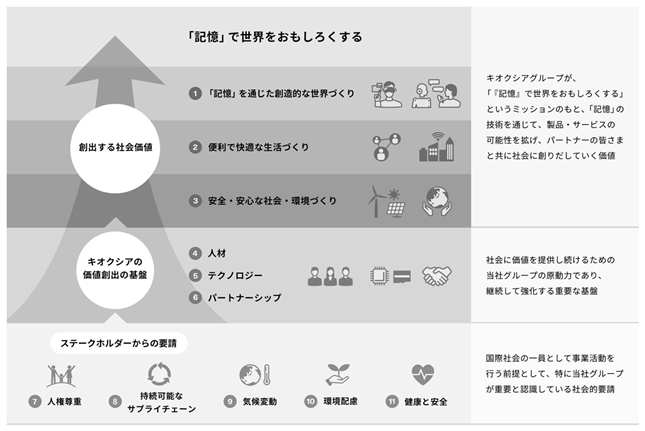
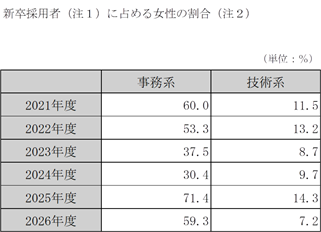

文中の将来に関する事項は、本書提出日現在において、当社グループが判断したものです。なお、本書で記載する市場データは外部の調査会社の調査に基づくものであり、当社では正確性を独自に検証しておらず、現在及び将来における実際の市場の規模・状況と大きく異なる可能性があります。
(1）経営の基本方針
当社グループは、「『記憶』で世界をおもしろくする。『記憶』の可能性を追求し、新しい価値を創り出すことで、これまでにない体験や経験を生み出し、世界を変えていく。」とのミッションのもと「『記憶』の技術をコアとして、一人ひとりの新たな未来を実現できる製品やサービス、仕組みを提供する。」というビジョンを掲げ、「メモリ技術」で新しい時代を切り拓き、世界を変えていくことを目指しています。
ミッション・ビジョンを実現するために、従業員一人ひとりが取り込んでいく価値観を以下の行動方針としてまとめています。
・ 一人ひとりが夢を持ち、語ることができる
・ 制約を設けず、可能性を追求する
・ 柔軟な発想で自ら考え、行動する
・ 多様な価値観を尊重し、協力し合う
・ 常に誠実さと、透明性をもって行動する
(2）経営環境及び経営方針
世界中に広がるデータエコノミーの波の中で、人々が扱うデジタルデータの総量は増加の一途を辿っており、これまで、日々増加するデジタルデータの処理のために、デジタルカメラ、スマートフォン、タブレット端末、PC等においてフラッシュメモリが使用されてきました。今後も、AIの発展により、世界における生成データ量は増加していくと言われております。当社は、オートモーティブ、エンターテインメント、ロボティクス、医療・ヘルスケア、インダストリーなど様々なシーンでメモリが果たす役割が重要になると考え、フラッシュメモリの利用も伸長すると見込んでおります。
また、フラッシュメモリの技術革新とそれによる記憶容量の増大は、様々なフラッシュメモリのアプリケーションへの採用と新しいマーケットの創出を牽引してきました。さらに、データ量の増加とフラッシュメモリの技術革新によって、HDDから、読み出し性能、衝撃・振動等の耐環境性、静寂性及び待機時の省消費電力性等により優れるSSDへの置き換えも進んでいます。データ量の増加とフラッシュメモリの技術革新の好循環によって、フラッシュメモリ市場は成長を続けるものと当社は考えております。
近年は、AI活用の普及やクラウドコンピューティング等ビッグデータビジネスの進展により、データセンター、エンタープライズ向けフラッシュメモリ需要の拡大傾向に加え、スマートフォン及びノートPC搭載メモリも大容量化傾向にあります。アプリケーション別では、SSD & ストレージ向けメモリ及びスマートデバイス向けメモリのそれぞれについて、記憶容量ベースでの市場規模は拡大傾向にあり、今後も記憶容量ベースでの市場規模の拡大傾向を当社は見込んでいます。
急速なAIの普及により、AI搭載製品の比率が高まると予想されており、これはフラッシュメモリの需要増加にさらにつながる可能性があります。また、生成AIが生成したデータは自動的にデバイスに保存されることとなるため、その結果、必要な１個当たりメモリ容量が増加することとなり、大容量のAI搭載製品がさらに普及することが予想されます。
さらに、データセンターからのフラッシュメモリ需要も、AIサーバーを中心に拡大すると予想されています。従来のサーバーとは異なり、AIサーバーには、電力効率が高く、高速なデータ転送ができるストレージが求められるところ、SSDは、DRAM及びHDDと比較して、性能、消費電力及びコストの面でバランスが良いことから、AIサーバーに不可欠なものとなると当社は考えています。
さらに、データセンター向けフラッシュメモリ需要は、AI学習サーバー及びAI推論サーバー向けフラッシュメモリ需要の増加により加速しており、今後もAI推論サーバーを中心に成長することが見込まれます。
加えて、フラッシュメモリ市場は、一般に、急速な技術革新と生産性の向上、顧客からの需要の変動と継続的な価格下落圧力、競合他社との市場シェア獲得競争等により、需給の循環的変動傾向が顕著であり、周期的に市況の改善と悪化が繰り返されていると考えております。
当社グループとしては、このようなマーケット環境において、当社グループの強みと考える高成長市場にアクセス可能な幅広い製品ポートフォリオをもって、規模が大きく高成長が見込めるエンドマーケットにて、これらのアプリケーションにおける各主要顧客との強固な関係構築を継続してまいります。また、業界をリードする技術競争力を有するフラッシュメモリ業界におけるテクノロジーリーダーとして、市場リーダーの求める製品の開発を推進するとともに、世界最大級（注）のフラッシュメモリ工場を活用し、生産規模及び生産効率を最大化することで高いコスト競争力を実現してまいります。
（注） TechInsights Inc.“NAND Market Report Q1 2026”による。2025年４月から2026年３月におけるビット生産量ベース（Sandiskグループの生産量を含む。）
足元の世界経済は、原油価格の高騰など地政学要因によるインフレ圧力の再燃リスクの下で、日本を除き、高金利長期化の局面にあり、金融環境は引き締まった状態が続いています。この結果、不動産市場や投資活動には下押し圧力がかかり、特に中国の不動産不況が世界経済の持続性に対する主要なリスク要因となっています。また、米国政府による各種関税など、地政学リスクは引き続き高い状況にあり、これらの要因により世界経済における不透明な見通しが続いています。
フラッシュメモリ市場においては、2023年後半からフラッシュメモリ製造業者各社の減産及び投資抑制が効果を表し始め、また顧客における在庫水準が適正化に向かったため、需給バランスの改善と販売価格が上昇しましたが、2024年後半からPC・スマートフォン顧客の在庫調整等により、価格や物量の下落が発生しました。足元のフラッシュメモリ市場は、好調なAI用途のデータセンター・エンタープライズ向けSSDがNAND市場の需要をけん引しており、需要が供給を上回る状況から販売価格が上昇しています。アプリケーション別では、スマートデバイスにつきましては第８世代BiCS FLASH™への移行が本格化したことなどから堅調な需要が継続しています。SSD & ストレージにつきましては、データセンター・エンタープライズSSDの需要がAI需要により堅調に伸長しています。中期的にもAI用途向けの大容量、高速、低消費電力のSSDの伸長が見込まれています。
当社グループは、当社グループの掲げるミッション及びビジョンを実現するため、当社グループの経営環境を踏まえた経営方針・経営戦略を実施していくとともに、将来に亘って「メモリ技術」で新しい時代を切り拓き、世界を変えていくことを目指すべく、2024年11月22日に長期財務モデルを策定し、公表しました。しかしながら、足元のAI市場の成長を背景とするフラッシュメモリの旺盛な需要により、当社グループの業績も急速に改善したことで、当該長期財務モデルを大幅に上回って成長している状況にあるため、2026年６月２日開催のInvestor Dayにて、これまでの長期財務モデルに代わるものとして、最新の市況を踏まえた事業戦略を説明いたしました。
このような経営環境において、当社グループは、次の経営方針・経営戦略によりビジョンを実現していきます。
［SSD & ストレージ］
SSDは高成長が期待されるアプリケーションですが、その中でもクラウドサービスの普及に伴うデータセンター向けの需要や、エンタープライズ向けストレージ機器の組み込み容量の増加等を受けて、データセンター・エンタープライズSSD市場について成長が見込まれると当社は考えております。
データセンターからのフラッシュメモリ需要は、今後AIサーバーを中心に拡大すると予想されており、AIサーバーの増加に伴い、より大きな記憶容量のSSDの需要が喚起されると考えられます。
かかる市場環境を踏まえ、当社グループは、中期的には大手データセンター、エンタープライズ顧客向けを中心としたデータセンター、エンタープライズSSDのより高いシェアの確保に取り組み、長期的にはSSD市場におけるより高いシェアの獲得を目指します。生成AIの普及により、データ生成と活用が加速し世界のデータセンターへの投資が拡大しています。この市場を支えるために、当社は、第８世代BiCS FLASH™ ３次元フラッシュメモリを搭載した、データセンターや高性能計算（HPC）、生成AI用途向けの高速NVMe™ SSD「KIOXIA CM9/CD9Pシリーズ」のサンプル出荷を2025年５月に、業界初245.88TBの大容量エンタープライズSSD「KIOXIA LC9シリーズ」のサンプル出荷を2025年８月に開始しました。これらの製品群に加え、生成AIの回答精度向上に貢献するベクトル探索ソフトウェア「KIOXIA AiSAQ™」の技術を発表し、製品と組み合わせることで、システム全体のパフォーマンス向上に寄与しています。サーバーはリアルタイム処理へ移行し、低遅延ネットワークの重要性が増しています。2026年にはAIが大規模言語モデルの「学習」から「推論」へと移行し、推論ワークロードが急増すると予想されています。これに対応する「KIOXIA GPシリーズ」のコンセプトとして、NVIDIA Storage-Next™アーキテクチャー向けに高性能・低遅延なメモリ拡張を可能にするKIOXIA Super High IOPS SSDを2026年３月に発表しました。業界のキープレイヤーとのコラボレーションを通して、AIインフラに適した多様なソリューションを展開し、デジタル社会の持続的な発展を支援します。
さらに、一般消費者向け市場をターゲットとするSSDであるクライアントSSD（PC、ラップトップ、タブレットコンピュータ等の一般消費者向け市場をターゲットとするSSD）についても、当社は成長が見込まれると考えております。
クライアントSSDについては、2020年７月に台湾・LITE-ONテクノロジー社から買収したSolid State Storage Technology Corporationの開発リソースと当社開発リソースを融合し、技術力の強化と開発の効率化によって、お客様の要求にタイムリーに応えていきます。
さらに、急速に普及しているAIの活用に伴い、大規模言語モデルの開発、学習、推論用途でデータセンター、エンタープライズ向け大容量ストレージの需要の高まり、AIを搭載したエッジデバイスの登場によるクライアントSSD市場の更なる拡大も期待されております。当社グループはこのような新たな市場の変化を逃すことなく、業界主要企業との関係性構築に努めながら、新たな需要の喚起、創出、販売の拡大を目指します。
［スマートデバイス］
スマートフォン市場は依然として規模が大きく、成長しているアプリケーションであり、当社グループにとって引き続き重要なマーケットとなっています。今後、スマートフォン出荷台数については、これまでと同様の伸長は期待できないと考えられるものの、スマートフォン１台当たりのフラッシュメモリ搭載量は成長を続けると予想され、スマートフォン向けのフラッシュメモリの需要を牽引していくと見込んでおります。
スマートフォン市場において、当社グループは、これまで培ってきた技術力、生産能力、生産性等に基づき、グローバルな主要企業と強固な関係性を長年に亘って構築しており、当該顧客のみが有する最先端のテクノロジーニーズに対応した信頼性の高い高品質な製品やサポートを提供しております。当社グループのかかる強みを活かして、記憶容量ベースでの市場拡大に合わせて、「BiCS FLASH™」の大容量化・積層化・量産化を推進することで、今後もスマートフォンの高機能化、大容量化を支えてまいります。
［生産・販売］
当社グループが製造合弁契約を締結しているSandiskグループと合わせたフラッシュメモリの当社グループ及び関連会社等のビット生産量は世界最大級となる29％（注）のシェアを有しております。さらに、拡大するフラッシュメモリ市場に対応すべく、四日市工場及び北上工場の生産能力の強化により、更なる出荷量の拡大を図ります。また、フラッシュメモリの製造は、材料となるシリコンウエハー上に微細な集積回路を作りこむため、工程は数百に及び、製造プロセスの効率化が重要になります。当社グループは、製造過程におけるAIの活用や、四日市工場において製造棟間を繋ぐ棟間搬送を駆使し、製造棟全体の設備の稼働率を高めることで生産性を向上させる統合生産体制を採用することにより、各工場の知見とデータを相互に活用することで、高い生産効率の実現を図っていきます。今後も継続して生産効率の向上を図り、フラッシュメモリ市場の需要成長に見合う出荷量成長率（メモリ容量単位の前年比成長率）を維持することを目指しております。また、設備投資についても引き続き規律あるアプローチを採用した上で、投資の効率化を図ります。加えて、ギガバイト当たりのコストの削減も図ってまいります。
販売に関しては、海外現地法人リソースを充当するとともに、効率的な顧客管理（CRM）等、顧客のニーズに対応した販売インフラの拡充を進めます。
（注） TechInsights Inc.“NAND Market Report Q1 2026”による。2025年４月から2026年３月におけるビット生産量ベース（Sandiskグループの生産量を含む。）
［研究開発］
データ処理量の増大に伴い、フラッシュメモリに代表される不揮発性半導体メモリについても、特にSSD用途において高速動作が要求される傾向にあります。当社グループは、フラッシュメモリ業界のパイオニアとして1987年に世界初のNAND型フラッシュメモリを発明し、1991年には世界で初めてNAND型フラッシュメモリを量産しました（注１）。また、2024年には当社グループのSSDが、国際宇宙ステーション（ISS）での科学実験を行うサーバーのストレージに使われました。本書提出日時点では、CBA技術・OPS技術や218層積層プロセスを用いた第８世代BiCS FLASH™を製品化するなど、コスト効率を高めながらメモリ容量を拡大する技術革新を行ってきました。直近２連結会計年度における当社グループの売上収益に占める研究開発費並びに販売費及び一般管理費（注２）の割合（平均）はそれぞれ6.8％及び4.1％（合計10.9％）であり、他社の公表情報も踏まえれば同業他社と比べて売上収益に比して低い水準に留めていると認識しており、コスト管理に対して規律あるアプローチを維持しています。
更なる技術革新に向けて、2023年６月に横浜市内に新たな研究・技術開発施設の稼働を開始しました。これにより分散していた技術開発機能を集結し、フラッシュメモリ、SSDの研究開発の効率性を高めます。また、2024年４月に先端技術研究所を新設し、AI技術の基礎研究からその応用、また次世代メモリ等の研究開発、新規事業につながる技術創出を強化していきます。
当社グループは今後も技術力を武器に、大容量、低コスト、高性能化による市場競争力のあるフラッシュメモリの開発を進めるとともに、信頼性、安定性も備えた、フラッシュメモリ新製品に代わる次世代メモリの開発も進めていきます。そして、これら将来のビジネスに必要な研究開発投資を積極的に行います。
（注）１．上記における発明、開発、量産及びサンプル出荷に関する記述については、当社グループ調べによります。
２．販売費及び一般管理費に含まれる研究開発費を控除し、買収等に伴い発生したPPA（Purchase Price Allocation）による影響額や、勤務継続型株式報酬制度及び業績連動型株式報酬制度における報酬の当年度費用計上額などを調整したものです。PPAについては、株式会社Pangeaによる旧東芝メモリ株式の買収等に伴い実施した資産の公正価値を基礎とした取得金額の配分手続を指します。以下同じです。
［財務施策］
当社グループは、中長期的に、想定されるフラッシュメモリ市場の需要成長に見合う出荷量成長率（記憶容量ベース）を維持すること、メモリ製品の販売価格が過去と同程度の下落傾向となること、及び当社グループが過去と同程度のギガバイト当たりのコストの削減を実現することを前提に、フラッシュメモリ市場の周期的市況におけるトレンドとして、高いNon-GAAP営業利益率（Non-GAAP数値については、「４ 経営者による財政状態、経営成績及びキャッシュ・フローの状況の分析」で定義される「Non-GAAP指標」をご参照ください。）を実現していくことを目指しております。
また、当社グループは、当連結会計年度末において、１兆228億円の有利子負債に対し、4,707億円の現預金を有しており、ネット有利子負債は5,521億円となります。当社グループは、事業活動等により生じるフリー・キャッシュ・フローを将来の成長資金として使用するとともに有利子負債の返済に充当し、財務体質を改善し、中長期的にはネット・キャッシュ（有利子負債の額を現預金の額が上回る状況）を目指します。
なお、当社のネット有利子負債／Non-GAAP EBITDA（注）（倍）の過去の推移は以下のとおりです。
|
2023年３月期 |
2024年３月期 |
2025年３月期 |
2026年３月期 |
|
3.51 |
14.15 |
1.22 |
0.46 |
（注）Non-GAAP EBITDAは、営業利益（△損失）に減価償却費及び償却費を加算し、勤務継続型株式報酬制度及び業績連動型株式報酬制度における報酬の当年度費用計上額などを調整したものです。
(3）優先的に対処すべき事業上及び財務上の課題
① 拡大する市場についての対応
中期的なフラッシュメモリ市場は引き続き拡大が見込まれており、当社は競争力のある第８世代BiCS FLASH™の量産及び販売、市場要求に合った新製品の投入、特に市場伸長が見込まれるデータセンター・エンタープライズSSDの新製品の投入により、市場伸長に合わせた成長率を目指します。また、クライアントSSD市場及びデータセンター・エンタープライズSSD市場、特にAIによる高い需要が見込まれるTLCフラッシュメモリ搭載高帯域製品や、XL-FLASH™搭載製品、並びにHDDでは対応できない性能領域で拡大が見込まれる４ビット／セル（QLC）製品の開発及び市場展開を進めます。さらに、大規模言語モデルの開発、学習、推論用途でデータセンター、エンタープライズ向け大容量ストレージの需要の高まりに加え、AIを搭載したエッジデバイスなど、当社グループは市場の変化を逃すことなく、業界主要企業との関係構築に努めながら、新たな需要の喚起、新規創出によるビジネス拡大を積極的に推進します。
② 開発競争力の強化
３次元フラッシュメモリは高積層化に伴い開発難易度が高まり、競争は激化しています。その中でコストや性能における競争力を維持していく技術開発が重要と考えています。高ビット密度化、低消費電力化、高速インターフェース向けの技術開発を推進し、最先端の規格や市場要求に対応していきます。新メモリの研究開発や、BiCS FLASH™応用製品の開発、新材料やAI、システム技術の研究にも積極的に取り組みます。これらの研究開発を強化するため、2024年４月に先端技術研究所を新設、また社内におけるAI活用やデジタルトランスフォーメーションの推進を行うことで、次世代メモリ等の研究開発、新規事業につながる技術創出を強化していきます。
③ 財務健全性の確保
引き続き財務の健全性を高めてまいります。資本構成の最適化並びにより有利な条件の実現及び財務コストの削減に取り組み、全体的な財務の安定性を高めていきます。また、強固な財務指標を維持し、財務管理を慎重に行うことにより、信用力の向上に努めます。
財務健全性の確保のため、安定的かつ柔軟なキャッシュ・フローの創出に注力します。具体的には、現在の投資効率を維持しつつ、設備投資については政府からの補助金も活用しながら引き続き規律あるアプローチを採用した上で、最適な在庫管理を実施し、需要と供給のバランスの維持を図ります。
④ 生産能力拡大及び地政学リスクへの対応
拡大するフラッシュメモリ市場に対応し、需要に沿った生産能力の拡大を図ります。今後、適切なタイミングで北上工場の拡張を行います。また、競争力のある最先端のBiCS FLASH™製品を市場に投入することでコスト競争力を維持しながら、投資効率を改善し、設備投資額の最適化を行います。半導体は情報通信技術やエネルギー、国防など多くの分野で必要不可欠であり、当社は、日本国内における最先端フラッシュメモリの開発・生産の強化を通じて、半導体関連産業の発展に貢献してまいります。後工程拠点は、米中対立や台湾有事等の地政学リスクを見据えた後工程拠点計画を推進し、リスク低減を図ります。2024年２月には、キオクシア四日市工場及びキオクシア北上工場における第８世代及び第９世代BiCS FLASH™を生産する設備投資計画、また北上工場の第２製造棟の設備投資計画が、経済産業大臣により、「特定高度情報通信技術活用システムの開発供給及び導入の促進に関する法律」に基づく「特定半導体生産施設整備等計画」に認定（注）され、整備を進めております。
また、米中対立、中東情勢悪化、各国関税等の地政学リスクや地震等の自然災害によるサプライチェーンへの影響が、当社の調達コストの増加や製品供給網に影響を与える可能性があります。これらに対応すべく、複数の調達先確保や部品の共通化及び部品点数の削減により調達コストの改善や強靭なサプライチェーンの構築を進めます。
（注） 特定半導体生産施設整備等計画認定番号「2022半経第002号－２」（2022年７月26日付認定及び2024年２月６日付変更の認定）並びに「2023半経第002号－１」（2024年２月６日付認定）。
⑤ サステナビリティの取り組み
当社グループは、中長期的な事業活動を支える基盤を強化し、国際社会の一員としてステークホルダーの皆さまからの要請に応えていくため、サステナビリティ経営に取り組んでおります。
昨今、環境・社会に関する様々な課題が深刻化する中、当社グループは気候変動への取り組みを経営の最重要課題の一つと位置付けており、気候関連財務情報開示タスクフォース（以下「TCFD」という。）提言賛同の表明をしています。当社グループはこのTCFD提言に基づき、気候変動に対して、「ガバナンス」「戦略」「リスク管理」「指標と目標」の４つの視点から分析、取り組みを行い、その情報開示も積極的に進めています。当社グループは、2050年度までにグローバルな事業活動に伴う温室効果ガス排出量をネットゼロにするという目標を設定していますが、この目標を達成するため、地球温暖化係数の高いPFC等ガスの除害装置を対象設備に2011年度以降100％設置しています。また、2040年度までに再生可能エネルギー由来の電力比率を100％とする長期目標の達成に向け、自家消費型太陽光発電システムの導入など、再生可能エネルギーの最適かつ安定的な調達に努めます。
また、変化し続ける事業環境と市場ニーズに迅速に対応し、社会と自社の持続的成長を進めていくためには、技術者をはじめとした様々な人材を確保することが必須となります。当社グループは、多様な人材がそれぞれの力を十分に発揮することが、イノベーションを創出し、企業の成長や社会への新しい価値創造につながるという考えから、それぞれの個性・能力を最大限に発揮するための風土醸成や、女性の経営参画の推進等、ダイバーシティ（多様性）への取り組みを積極的に進めています。
当社の具体的な取組については、「２ サステナビリティに関する考え方及び取組」もご参照ください。
(4）経営上の目標の達成状況を判断するための客観的な指標等
当社グループは、メモリ市場におけるシェアの獲得状況及び物量と売価の状況を適切にとらえる観点及び適切なコスト管理を実現していく観点から売上収益と営業利益を重要な経営指標と考えております。またPPAを含む非経常的な項目やその他特定の調整項目を控除若しくは調整したNon-GAAP営業利益も経営者の意思決定に使用しております。なお、Non-GAAP営業利益を含むNon-GAAP数値については、「４ 経営者による財政状態、経営成績及びキャッシュ・フローの状況の分析」で定義される「Non-GAAP指標」をご参照ください。
当社グループのサステナビリティに関する考え方及び取組は、次のとおりです。
なお、文中の将来に関する事項は、本書提出日現在において入手し得る情報に基づいて当社グループが判断したものであり、不確実性が内在しているため、実際の結果とは異なる可能性があります。
当社グループは、「『記憶』で世界をおもしろくする」というミッションのもと、「記憶」の技術を通じて社会に価値を創出し続けていきます。そのために、当社グループの中長期的な事業活動を支える基盤を強化し、国際社会の一員としてステークホルダーの皆さまからの要請に応えていくことで、持続可能な社会の発展に貢献します。
地球規模での気候変動などの環境問題、産業活動の拡大に伴うエネルギー・資源不足、貧富の差をはじめとする格差の拡大など、昨今では様々な環境・社会課題が深刻化しており、当社グループが社会の持続的な発展のために果たすべき役割はますます高まっていることから、当社グループはサステナビリティを経営戦略の中で最も重要な取り組みの一つと位置付けています。サステナビリティ・マネジメントをさらに進化させるために、サステナビリティ会議体を設置し、経営層が中長期的な経営戦略を決定するため、重要な非財務資産の特定や目標の設定について協議する体制にしています。また、当社グループが中長期に成長し社会に価値を提供し続けるために、特に重要なテーマを「戦略マテリアリティ（サステナビリティ重要課題）」として設定しています。
このサステナビリティ体制のもとで当社は、気候変動対策においては、TCFD提言への賛同を表明するとともに、TCFD提言に基づいた「気候関連リスクと機会の分析」や「シナリオ分析」について検討を進めており、TCFDに沿った取り組みと情報開示を積極的に推進しています。また、主に人権対策において、RBA（Responsible Business Alliance）に加盟し、RBAの行動規範に沿った責任ある事業遂行（自社サステナビリティ活動の推進、及び調達取引先への要請）に取り組んでいます。
(1）ガバナンス及びリスク管理
① ガバナンス
当社のサステナビリティに関する戦略・方針・目標等は、社長執行役員が議長を務め執行役員により構成されるサステナビリティ戦略会議において審議、決定し、定期的にそれらの進捗度・達成度を確認した上で、取締役会に報告しています。サステナビリティ戦略会議で策定された戦略・方針に基づき、サステナビリティ担当執行役員を委員長とするサステナビリティ推進委員会において、重要テーマ並びに指標及び目標の策定等を討議しています。本会議体の下部には、重要なサステナビリティ課題に取り組むタスクフォースを設置し、進捗の報告や方向性の確認を行っています。また、気候変動、人材多様性等、サステナビリティ関連の主要の指標について、経営計画に織り込み、事業計画と統合したサステナビリティ活動計画を策定しています。
さらに、サステナビリティ推進を専任で行う部門として、サステナビリティ推進部が、経営層のもとでサステナビリティ・マネジメントを強化、推進しています。
② リスク管理
サステナビリティ関連のリスクと機会について、部門横断のタスクフォースにて、気候変動の財務へのインパクトの算出等、事業に及ぼす影響について検証をしています。これらのリスクと機会及び財務インパクトは、サステナビリティ戦略会議やサステナビリティ推進委員会にて議論され、その概要について当社ウェブサイトで公表しております。
また、当社グループは、事業の形態やバリューチェーン、関係するステークホルダーに則したサステナビリティ課題・リスクをマッピング・分析し、その回避・軽減に取り組んでいます。
(2）戦略並びに指標及び目標
① 戦略
当社グループは、当社グループの中長期的な経営にとって強みとなる非財務資本を特定し、ステークホルダーの皆さまとともに実現したい社会や製品・サービス・技術開発の社会への影響も考慮して、「戦略マテリアリティ」の３つの構成領域と11の要素を抽出しています。

「戦略マテリアリティ」の構成領域は次のとおりです。
（創出する社会価値）
当社グループが、「『記憶』で世界をおもしろくする」というミッションのもと、「記憶」の技術を通じて、現在、そして将来の製品・サービスの可能性を拡げ、パートナーの皆さまとともに社会に中長期に創りだしていく価値
（価値創出の基盤）
社会に価値を提供し続けるための当社グループの原動力と考えており、継続して強化する重要な基盤
（ステークホルダーからの要請）
国際社会の一員として事業活動を行う前提として、特に当社グループが重要と認識している社会的要請
さらに、「戦略マテリアリティ」の主な要素は次のとおりです。
（気候変動）
当社グループは、気候変動への取り組みを経営の最重要課題の一つと位置付け、事業活動と製品のライフサイクルの両面から、温室効果ガス排出と事業で使用するエネルギーの削減を目指しています。一例として、当社グループは、四日市工場と北上工場において、再生可能エネルギーの活用を推進するために大規模自家消費型太陽光発電システムを導入しており、今後も経営戦略の重要課題の一つと位置付けている気候変動への取り組みを加速させていきます。
（人材（多様性等））
拡大・高度化・多様化する市場ニーズに対応するためにも、人材は当社グループの重要な経営資本のひとつと考えており、多様な従業員がそれぞれの能力を発揮して活躍できるよう、ダイバーシティ（多様性）を推進しています。特に女性の経営参画推進のため、女性役職者数や、新卒採用における女性比率について目標を設定しています。また、公正な人事諸制度を構築するとともに、人材育成のための教育体系として、各種研修制度（基礎教育、グローバル教育、階層別教育、経営人材教育等）を整備し、人材の育成・活用を積極的に推進しています。人材戦略の推進にあたっては、教育委員会を設置、実績を踏まえた改善、翌年度の方針を審議する体制を構築しています。
（テクノロジー）
これからも社会に価値を創出し続けるために、半導体メモリにおけるテクノロジーリーダーシップを堅持し、将来を見据えた研究・技術開発を推進します。研究・技術開発の基本的な考え方として、「記憶」のテクノロジーリーダーとして、事業ポートフォリオを拡大し続けるために、最先端の研究開発に取り組んでいます。
（パートナーシップ）
お客様、研究機関・調達取引先をはじめとするパートナーの皆さまと強固な関係を構築し、ともに持続的な成長を果たし、社会に価値を創造していくことを目指していきます。
（持続可能なサプライチェーン）
当社グループは、各国・地域の法令や社会規範を遵守し、調達取引先との相互理解の促進と信頼関係の構築を通じて、サプライチェーン・マネジメントに取り組み、サプライチェーン全体で持続可能な調達活動の推進に努めています。
当社グループは、グローバルサプライチェーンにおける労働・安全衛生・環境・倫理などの社会的責任を果たすため、RBAとRBA傘下の責任ある鉱物調達に関わるイニシアティブであるRMI（Responsible Minerals Initiative）に加盟しております。レギュラーメンバーとして、RBAの行動規範に沿った責任ある事業遂行（自社サステナビリティ活動の推進、及び調達取引先への要請）や、責任ある鉱物調達に取り組んでいます。
② 指標及び目標
（気候変動）
温室効果ガス排出については、製造時に排出される地球温暖化係数の高いPFC等ガス（注１）を除害する装置を、対象設備に2011年以降100％設置しています。また2020年度には、2040年度までに使用電力の100％を再生可能エネルギーに転換する長期目標を策定しました。さらに、2023年４月には、2050年度までに当社グループのグローバルな事業活動に伴う温室効果ガスの直接・間接排出（スコープ１、２）をネットゼロにするという新たな目標を設定しています。省エネルギー活動、再生可能エネルギーの購入や非化石電力証書（注２）の活用も含めたエネルギー・ポートフォリオの検討により、事業の拡大に合わせて最適かつ安定した再生可能エネルギーの調達に努めます。また、低消費電力型製品のニーズが非常に高まっているため、製品のエネルギー効率と記憶容量を向上させる高集積化技術の研究開発に取り組んでいます。これについては、2017年度を基準とした１GB処理当たりのエネルギー消費量を2025年度までに50％削減するという高い目標を掲げました。
製造事業場での運用においては、省エネ法に基づき、前年度の総エネルギー使用量（スコープ２）の１％以上を削減する目標を掲げています。2024年度は、各種省エネルギー活動により、目標約20千t-CO2／年以上の削減に対して実績は約24千t-CO2／年の削減効果となり、目標を達成しました。2017年から2024年までの省エネルギー活動による削減効果は、累積で約17万t-CO2になります。
（注）１．PFC等ガス：半導体製造時等に使用する、地球温暖化係数が高い代替フロンガス。
２．非化石電力証書：再生可能エネルギー（再エネ）など発電時にCO2を排出しない非化石電源の環境価値を取り出し取引できるようにした証書。
（人材）
当社グループは、多様な専門性を持つ人材を採用し、一人ひとりが力を発揮できるように、キャリア採用の強化、育成の仕組みづくりなどを進めています。また、女性の経営参画推進のため、キオクシア株式会社では、新卒採用における女性比率を事務系45％以上、技術系15％以上とすることなどを中期目標に設定しております。達成状況は下記の表をご参照ください。2026年度には新たな目標として、2030年度までに、女性役職者比率を７％にする目標を設定しています。さらに、仕事と家庭生活の両立支援のために、2030年度までに育児休職取得率を女性は100%を維持、男性は85%以上にする目標を設定するとともに、「仕事と介護の両立支援ハンドブック」「子育て制度・手続きハンドブック」を作成し、従業員がこれらのライフイベントに関わらず、それぞれの力を十分に発揮し、活躍できるように努めています。

（注）１．大卒・大学院卒が対象です。
２．キオクシア株式会社における大卒、大学院卒の正規従業員の年度別入社実績です。なお、キオクシアホールディングス株式会社は新卒採用を行っていません。
キャリア採用数 実績（キオクシア株式会社）
|
2020年度 |
2021年度 |
2022年度 |
2023年度 |
2024年度 |
2025年度 |
|
275人 |
280人 |
282人 |
25人 |
63人 |
208人 |
障がい者雇用についても、社会全体が目指すゴール「ソーシャル・インクルージョン」に向けて、従業員同士の交流、働きやすく・働きがいのある環境の整備、さらには事業価値の創出の観点で、取り組んでいます。
当社グループの事業領域であるメモリ事業においては、高度で先進的な技術が事業遂行上必要である上に、グローバルな激しい競争があります。当社グループでは、「第４ 提出会社の状況 ４ コーポレート・ガバナンスの状況等 （１）コーポレート・ガバナンスの概要 ③ 企業統治に関するその他の事項 ロ．リスク管理体制の整備の状況」に記載のとおり、社長執行役員をリスクマネジメント・コンプライアンス責任者とし、また、リスクマネジメント・コンプライアンス委員会や個別の委員会での審議等を通じて、ビジネスリスク、財務・会計リスク、情報セキュリティリスク等の経済活動を遂行する上で生じるリスクについて、リスクの特性に応じた詳細な分析と管理を実施しております。かかるリスク・コンプライアンスマネジメントを通じて、当社の経営者が認識している当社グループの事業等のリスクのうち主要なものは以下のとおりですが、これらは当社グループの全てのリスクを網羅したものではなく、記載された事項以外の予見できないリスクも存在します。このようなリスクが現実化した場合には、当社グループの事業、経営成績、財政状態及びキャッシュ・フローの状況に重要な影響を与える可能性があります。
なお、文中の将来に関する事項は、本書提出日現在において入手し得る情報に基づいて当社グループが判断したものであり、不確実性が内在しているため、実際の結果とは異なる可能性があります。
(1)事業環境及び経済情勢に係るリスク
①フラッシュメモリ市場の循環的・短期的変動
フラッシュメモリ市場は、一般に、急速な技術革新と生産性の向上、顧客からの需要の変動と継続的な価格下落圧力、競合他社との市場シェア獲得競争等により、需給の循環的変動傾向が顕著であり、周期的に市況の改善と悪化が繰り返されています。2022年後半から2023年にかけて経験したように、当社グループ及び競合他社による生産量の拡大や顧客の過剰在庫等により需給バランスに不均衡が生じる場合、フラッシュメモリ製品の販売価格が急速かつ大幅に下落する可能性があります。当社グループは、当該リスクへの対応として、月に１度、業績や市況等の事業の状況を確認する機会を設け、市場の最新動向や顧客の製品動向、リテールの価格状況、顧客の在庫、競合他社の状況を確認して、調査会社等の情報をもとに経済情勢や最新の需給状況を把握し、当社グループの販売状況や生産、開発及び財務状況を確認し、適切に経営判断に反映するよう努めております。しかしながら、そうした経済情勢や需給状況の予測は極めて困難であり、またその経営判断への反映も適時・適切に行える保証はありません。従って、需給バランスが崩れ、顧客の需要又は販売価格が継続的に低迷する場合、当社グループの売上の減少や、工場稼働率の低下に伴う売上総利益率の悪化により当社グループの経営成績及び財政状態に重大な悪影響を及ぼす可能性があります。
フラッシュメモリ市場においては、AIを搭載したスマートフォンやPC、データセンターを含むAI関連の機器やサービスの普及など、デジタル社会の進展によりメモリ需要が中長期的に拡大することが調査会社等により予測されていますが、かかる予測は直近の低迷期を事前に予測しておらず今後も正確ではない可能性があります。また、フラッシュメモリ市場においては、当社グループの価格決定力は限られていることから、中長期的には、記憶容量ベースの販売価格は過去と同様のペースで下落する可能性があります。当社グループはコスト削減等により、収益性の向上に努めておりますが、今後経済情勢又はフラッシュメモリの需給状況により、当社グループの想定を上回る販売価格の下落又はフラッシュメモリ需要の減少が発生した場合には、当社グループの事業、経営成績及び財政状態に重大な悪影響を及ぼす可能性があります。
②需要変動
当社グループの製品に対する需要は、経済情勢、個人消費、技術革新、規制環境のほか、当社グループの製品が使用される最終製品の消費者市場や顧客の動向などの要因により左右され、とりわけ現時点における当社グループの主要な顧客であり、今後もAI分野での需要拡大が見込まれるデータセンター、エンタープライズ向けSSDや、引き続き当社グループの売上の相当程度を占めるスマートフォン市場の動向の影響を強く受ける傾向にあります。さらに、在庫管理を含むサプライチェーンが複雑化する傾向にあり、またデータセンター、エンタープライズ向けSSDは極めて限られた数の大口顧客が市場シェアの大半を占めていることから、市場の動向や顧客の需要の予測には困難が伴います。実際に、新型コロナウイルス感染症の拡大後の大口顧客による在庫調整や競合他社の生産量の変動の影響により需給バランスが悪化したことを受け、当社グループは2022年10月から2024年３月にかけて生産調整を実施し、今後も市場の需給バランスが悪化した場合には同様の対応をする可能性があります。当社グループは、当該リスクへの対応として、上記「①フラッシュメモリ市場の循環的・短期的変動」に記載のとおり、経済情勢及び最新の需給状況の把握とその経営への反映に努めておりますが、かかる需要を事前に正確に予測することは困難であり、当社グループが、かかる需要の変化を予測できず、又はかかる変化に適時・適切に対応できない場合には当社グループの製品が顧客あるいは最終製品市場の消費者の要求水準に見合う製品を供給できず、顧客からの受注を失う、想定した販売規模や収益性を下回る、あるいは供給過剰による販売価格の下落等が生じるなど、当社グループの事業、経営成績及び財政状態に影響を及ぼす可能性があります。
また、データセンター等のストレージ、スマートフォン、サーバー等、当社グループの製品の顧客における新製品の売れ行きや大容量化の進展遅れ等様々な要因による需要の急減、又は当社グループの想定する時期若しくは規模での需要拡大が生じない可能性があります。また、それにより価格の下落、生産量の過剰が発生し、当社グループの経営成績に影響を及ぼす可能性があります。
③AI関連市場の成長
近年、AI技術の進展にともない、AIを搭載したスマートフォンやPC、データセンターを含むAI関連の機器やサービスが急速に普及しています。これらのAI関連の機器やサービスには大容量のメモリ系半導体を必要とすることから、AI関連の需要は今後フラッシュメモリの需要を中長期的に牽引することになると期待されていますが、AI関連市場が予想されたとおりに成長する保証はないうえ、DRAMを含む他のメモリ半導体やHDDが存在する状況においてAI関連市場の成長がフラッシュメモリの需要につながるとは限りません。当社グループは、このような新しい需要の獲得に対応するため、市場の調査、分析やお客様との対話を積極的に行い、AI関連のニーズの把握に努め、研究開発を推進しております。しかしながら、AI関連のニーズに適合するための先端的なフラッシュメモリ技術の研究開発や、競争力のある価格での量産化の実現については、これらを他社に先駆けて実行できない場合や、他のメモリ半導体が需要を獲得し、当社グループがAI関連需要を取り込むことができなかった場合には、当社グループの経営成績に影響を及ぼす可能性があります。
④競合他社との競争、買収や合弁会社設立等による業界再編
当社グループは海外を中心としたグローバルな大企業である競合他社との厳しい競争下にあり、また、フラッシュメモリは主要な競合他社が限定されていることから、主要な競合他社の技術や設備への投資、販売量、戦略等による影響を強く受ける傾向があります。競合他社の中には、フラッシュメモリに加えてDRAMを提供するなど、当社グループにない技術を保有し、当社グループよりも大きな資金力を有している企業もあり、当社グループよりも競争力において優位に立つ可能性があります。また、中国においては、政府の支援による半導体の国産化に向けた動きの加速も見受けられる一方、米中貿易摩擦の影響により今後中国における海外企業の参入や事業活動に制約が生じる可能性もあります。また、中国のほか、米国、EU及び韓国等においても、政府が半導体事業に対して多額の補助金を提供しており、かかる補助金の交付を受けた製造業者が生産効率を度外視した性能やキャパシティの向上を図る可能性もあり、グローバルな競争はさらに加速しています。今後、当社グループが、市場シェアの維持、拡大を図るためには、主要製品の市場の動向や顧客のニーズを適時・適切に把握し、競合他社に対して、特に販売価格、性能、生産効率の優位性を維持することが不可欠です。当社グループは、当該リスクへの対応として、競争力のある製品を市場に供給するため、競合他社の動向を常に確認し、また、研究開発、生産効率の改善、高集積化による利益率の向上を図る取り組みを続けておりますが、それらの実現が他社に遅れ、販売価格の前提となる生産効率、性能、生産量が競合他社に劣る場合、利益率の圧迫や、顧客からの製品の受注を失い、又は当社グループのシェアを維持することができないことにより、当社グループの事業、経営成績及び財政状態に影響を及ぼす可能性があります。
また、メモリ・半導体市場は、市況の変化も大きく、当社グループを含めグローバルに事業を展開する事業者が多数います。このような事業環境下で、SK hynix Inc.は、Intel Corporationのフラッシュメモリ事業を買収し、また、Western Digitalグループのフラッシュメモリ事業は、Sandiskグループとして分離するなど、メモリ・半導体市場においては、今後も事業の買収、事業提携等が行われる可能性があります。これらの買収等に当社グループが含まれる場合も含まれない場合も、当社グループの競争環境が大きく変化する結果、当社グループの競争力が悪影響を受ける可能性があります。
さらに、キオクシア株式会社及び製造合弁会社３社は、我が国政府から、四日市工場におけるフラッシュメモリの生産に関し、2022年度から2025年度までに約929億円の補助金が交付されました。また、キオクシア株式会社、キオクシア岩手株式会社及び製造合弁会社３社は、我が国政府から、四日市工場及び北上工場におけるフラッシュメモリの生産に関し、最大で1,500億円（未交付分は2026年３月31日時点で約318億円）の補助金が交付される予定となっております。これら補助金を含め、かつ、Sandiskグループの取得分を除くと、当社グループは、2025年３月期に437億円、2026年３月期に564億円の資産の取得に対する補助金の交付を受けておりますが、当社グループが今後も同様の条件のもとで補助金の交付を受けることができる保証、また、補助金の交付によって当社グループが外国政府より不利な取扱いを受けないという保証はなく、今後の条件によっては当社グループの経営成績及び財政状態に影響を及ぼす可能性があり、また、当社グループの資金調達を含む事業活動に制約が生じる可能性があります。
⑤マクロ経済の変動
当社グループはグローバルに事業を展開しており、当社グループの経営成績も、世界、主要国の経済動向の影響を受けます。当社グループは、マクロ経済環境の影響に対応するための情報収集に努め、変化に対する必要な対策を講じる体制を整備しており、例えば、サプライチェーンの強化等の対策を実施しておりますが、米中貿易摩擦とこれに伴う中国企業への規制の強化、米国における経済政策の変更や関税政策の変更、中国その他の新興国の成長の減速等による国内外における経済活動や消費の停滞とこれに伴う市場環境の悪化、ウクライナ情勢や中東情勢、台湾をめぐる潜在的な対立を始めとする地政学リスクの上昇、原材料及びエネルギー価格等の高騰、金融市場の急激な変動等様々な要因により、製品需要、販売価格、生産活動に影響が生じた場合には、当社グループの売上の減少や、工場稼働率の低下に伴う売上総利益率の悪化に繋がる可能性があり、これにより当社グループの事業、経営成績及び財政状態に影響を及ぼす可能性があります。
⑥規制環境の変動
当社グループは、全世界において事業を展開しているため、各国で規制を受けるところ、半導体については各国において経済安全保障上の重要性が認識され、規制が大幅にかつ急激に変更される可能性があります。当社は、かかるリスクへの対応として、報道や各国当局の公表資料、法律事務所等のアドバイザーからの情報、JETRO、JEITA、CISTEC、米SIA等の業界団体活動を通じて得る情報等により、主要各国の規制動向の情報を早期に入手することに努め、必要に応じて社内周知を行うことにより、法規制遵守の徹底、事業影響への最小化を図っています。しかしながら、これらの対応策が有効に機能する保証はなく、国内外の各地域の政治、社会情勢や政策の変化、投資規制、収益の本国への送金規制、輸出入規制、外国為替規制、税金、贈収賄規制、競争法関連規制等を含む各種規制の動向が各地の需要、当社グループの事業体制に悪影響を与える可能性があり、これにより当社グループの事業展開及び経営成績に影響を及ぼす可能性があります。特に米中貿易摩擦に伴う関税、税金その他の輸出入関連規制や運用見直しにより、中国に所在する当社グループの主要顧客への販売が制限される又はかかる規制により当該顧客の生産量が減少する場合には、かかる主要顧客からの当社グループの売上収益が大幅に減少する可能性があり、また、当社グループが規制の対象となり米国に所在する当社グループの主要顧客との取引が制約される可能性や、米国に所在する当社グループの主要顧客が中国市場へのアクセスを失い生産量が減少し、当該顧客に対する当社グループの売上収益が減少する可能性、当社グループの原材料や生産設備の調達先が規制対象となり、必要な原材料等の調達等に影響を及ぼす可能性があるなど当社グループの事業展開及び経営成績に重大な影響を及ぼすおそれがあります。また、米中貿易摩擦がさらに激化した場合や中国に対する規制の強化等がなされた場合には、米中各政府により、相手国企業に対する更なる規制強化、経済制裁、法令の制定又は改正等がなされる可能性もあり、その内容と当社及び競合他社の対応状況等によっては、当社グループの事業、経営成績及び財政状態に重大な影響を及ぼす可能性があります。
(2)経営方針・経営判断に係るリスク
①経営戦略に関するリスク
当社グループは、当社グループの掲げるミッション及びビジョンを実現するため、当社グループの経営環境を踏まえた経営方針・経営戦略を実施していくとともに、将来に亘って「メモリ技術」で新しい時代を切り拓き、世界を変えていくことを目指すべく、足元のAI市場の成長を背景とするフラッシュメモリの旺盛な需要も勘案した事業戦略を策定しております。しかしながら、(i)AI需要の成長を背景にフラッシュメモリ市場が、調査会社等によって予測されているとおり（上記「１ 経営方針、経営環境及び対処すべき課題等 (2）経営環境及び経営方針」参照）に成長しない可能性、(ii)他社との競合や技術革新によりデータセンター、エンタープライズ向け製品に係る当社の市場シェアが伸び悩む可能性、(iii)他社の増産による需給関係の悪化や顧客との交渉等によりフラッシュメモリの単価が伸び悩む可能性、(iv)円安やインフレの影響、サプライチェーンリスクの顕在化、人材の不足等により、当社による生産設備の増強や生産効率の向上が当社の予定どおりに実施されない可能性があります。当社は当該事業戦略の遂行に努めてまいりますが、上記の各リスクや本「３ 事業等のリスク」記載の他のリスクが顕在化した場合には、当該事業戦略と大きく異なる結果となる可能性があります。
②フラッシュメモリ市場の予測と設備投資
当社グループは、需要動向、生産プロセス技術の開発状況及びその投資効率などを総合的に勘案しつつ、四日市工場及び北上工場における生産設備等への投資並びに研究開発等に係る設備投資を行う予定です。しかしながら、生産開始時点で、需要予測に対して市場が大きく変動した場合、生産設備過剰若しくは不足により、利益率の悪化、過剰在庫の発生、販売量又は販売価格の下落、固定資産の減損、あるいは販売機会の喪失やシェアの低下に繋がる可能性があります。当社は、設備投資の決定の際に、最新の需要予測や経営環境を確認し、リスクを評価しておりますが、フラッシュメモリ市場における需要の正確な予測は困難であり、また、製造設備、インフラの発注納期が長いため、これらの評価や予測が正確であるとの保証はなく、当社の予測が実際の経営環境と異なる場合、当社グループの事業、経営成績及び財政状態に影響を及ぼす可能性があります。
また、当社グループはかかる多額の設備投資に加え、研究開発投資も継続的に行っており、固定費の割合が高い状況にあります。当社は、市場の変動に応じて設備投資計画を変更することは可能ですが、固定費の削減には限界があります。そのため、比較的軽微な売上収益の低下であっても営業利益やキャッシュ・フローに与える影響は相対的に大きくなり、当社グループの事業、経営成績及び財政状態に影響を及ぼす可能性があります。
③投資の計画と効果の乖離
当社グループは、設備投資の決定の際に、納期、必要な人材や設備・資材の確保状況を継続して確認しております。また、技術開発については、競合他社の状況を注意深く把握し、当社製品の競争優位性の検証を継続しております。しかしながら、当社グループが行う四日市工場、北上工場の新棟立ち上げ等の設備投資、次世代フラッシュメモリ等技術開発投資等については、設備納期、量産立ち上げ、歩留まりの改善、開発の進捗、必要な人材や設備・資材の確保等にかかる遅延、また当初予定された歩留まり、製造工期、製品特性が実現されないこと等により、投資開始時点の計画と生産開始時期に乖離が生じる可能性（なお、2022年後半から2023年にかけてのメモリ市場における急激な需給の悪化を受け、予定していた設備投資を一部延期いたしました。）や、当初想定した生産能力、歩留まり、生産効率が得られず、又はこれらが得られたとしてもこれに見合う需要が得られない等により、想定された投資効果が生じない可能性があります。資金回収時期の遅延、新製品の開発・販売において競合他社に劣後することによる競争優位性の低下やシェアの低下により、当社グループが想定した利益を確保できず、当社グループの事業、経営成績及び財政状態に影響を及ぼす可能性があります。
④戦略的提携、合弁、買収、出資等の成否
メモリを始めとする半導体業界では、提携、合弁、買収、出資等による再編が行われており、当社グループにおいても技術の獲得や、事業領域の拡大、競争力の強化や収益力向上を行うため、提携、合弁、買収、出資等を実施することがあり、例えば、Sandiskグループとの間で製造合弁契約を締結し、合弁事業を行っています。2020年７月には、台湾・LITE-ONテクノロジー社の子会社であるSolid State Storage Technology Corporationとその関係会社の全株式を取得しました。また、2022年６月には、株式会社東芝の関係会社である東芝デジタルソリューションズ株式会社より中部東芝エンジニアリング株式会社の全株式を取得しました。提携、合弁、買収、出資等においては、対象先の経営状況、事業内容、財務内容、法令遵守や契約関係等について詳細な事前調査を行い、リスクを吟味した上で決定しておりますが、提携、合弁、買収、出資等を行った対象事業の経営成績が悪化した場合には、当社の連結利益の悪化、保有株式やのれんの減損が起きる可能性があり、これにより当社グループの事業、経営成績及び財政状態に影響を及ぼす可能性があります。また提携、合弁、買収、出資等が当社グループ、若しくはその一部事業についてなされたものの、想定どおりに統合が進まず、また、当社グループが期待するシナジー、スケールメリット等の効果を得られなかった場合には、経営方針の大幅な変更、事業規模の縮小、スケールメリットの喪失等による収益悪化が起きる可能性があり、これにより当社グループの事業、経営成績及び財政状態に影響を及ぼす可能性があります。また、提携、合弁、買収、出資等の形態や内容等によっては、相手方である第三者の行為を当社グループが有効にコントロールすることができず、また、特定の第三者との提携、合弁等を実施した結果、他の者との提携、協業又は取引等が制約される等、当社グループの経営上の選択肢又は事業運営が制約される可能性があります。
⑤Sandiskグループとの合弁事業
当社グループは、Sandiskグループとの間で製造合弁契約を締結し、製造合弁会社３社を設立しています。かかる合弁事業を通じることで、当社が単独で投資を行う場合に比して大規模な投資が可能となり、設備投資額や生産効率面でのスケールメリットを享受することが可能となります。合弁契約の概要は、製造合弁会社３社が当社グループ及びSandiskグループからの資金借り入れ又は製造合弁会社３社によるリース契約により生産設備を調達し、当社グループの四日市工場及び北上工場に設置、当社グループは製造合弁会社３社から無償貸与された生産設備にて生産を行い製造合弁会社３社に加工済みのウエハーを販売し、更に製造合弁会社３社から当社グループ及びSandiskグループに50％ずつの割合で販売するというものです。当社グループは、合弁契約に従って、Sandiskグループによる契約違反など合弁契約上の解約事由が発生した場合、製造合弁会社３社の保有する生産設備の残存簿価を反映したSandiskグループの持分を買い取る可能性があり、この場合多額の資金が必要となることにより当社グループの事業、経営成績及び財政状態に影響を及ぼす可能性があります。また、当該製造合弁会社３社が保有する生産設備のリース契約に関して、現在キオクシア株式会社とSandisk Corporationが個別に50％の債務保証をしていますが、Sandisk Corporationの経営成績又は財政状況の悪化により、同社が自身の債務保証を履行できない場合、キオクシア株式会社がSandisk Corporation分の保証債務を承継し又は当該保証債務不履行により合弁契約が解約され、製造合弁会社３社の保有する生産設備の残存簿価を反映したSandiskグループの持分を買い取る可能性があります。これにより当社グループの経営成績に影響を及ぼす可能性があります。更に、当社は、Sandiskグループとの間で、生産、投資、研究開発、オペレーション、ファイナンス等について多くのコミュニケーションを行っておりますが、合弁契約上、合弁会社の運営に関しては、Sandiskグループと対等な権利義務を有しており、かつ、Sandiskグループは当社グループと競合関係にあるため、両社の経営及び戦略的方向性に乖離が生じた場合には、意思決定に想定以上の時間を要するなど、合弁会社の運営に支障が生じる可能性があり、これにより当社グループの事業、経営成績及び財政状態に影響を及ぼす可能性があります。
なお、キオクシア株式会社がSandiskグループの持分を買い取った場合、当該製造合弁会社３社が当社の連結子会社として扱われる可能性があり、その場合、製造合弁会社３社の経営成績が当社の連結財務諸表に反映されることにより、当社グループの経営成績及び財政状態に影響を及ぼす可能性があります。
また、Sandiskグループとの間の製造合弁契約の有効期間は、四日市工場及び北上工場のいずれについても2034年までとされており、当該有効期間の経過後も合弁事業を継続するかどうか、継続する場合、どのような契約条件となるかは現時点では未定です。継続しない場合には、製造合弁会社は解散、清算されることとなり、当社グループの事業、経営成績及び財政状態に影響を及ぼす可能性があります。
なお、上記「第１ 企業の概況 ２．沿革」のとおりSandiskグループは2025年２月にWestern Digitalグループから分社して米Nasdaqに上場しました。当社は現時点においても、SandiskグループのWestern Digitalグループからの分社が当社又は製造合弁会社に重大な影響を及ぼすとは見込んでいませんが、当社が合弁事業を通じて享受してきたメリットを、今後も享受し続けられるという保証はありません。その他、製造合弁契約上一定の制約はあるものの、Sandiskグループが第三者との間で、当社に競争上の悪影響を与えるような戦略的提携関係を構築しないという保証はありません。
⑥技術革新
フラッシュメモリは高度な技術を要し、複雑な生産工程を経て生産されておりますが、世代交代や大容量化、特性改善等の技術革新が非常に早い製品です。また将来的にはフラッシュメモリに代わる新技術が生まれる可能性もあります。このため、最新の技術を利用した製品を迅速に提供するためには、長期的かつ継続的な多額の研究開発投資が必要となります。これに対応するため、当社は、最新の技術動向を確認し研究開発・投資計画へ反映することとしており、また、研究開発の実行にあたり、自社戦略との整合性や、市場要求を満たしているかの確認を行っております。具体的には、BiCS FLASH™の高積層化、４ビット／セル（QLC）への移行、その他の新規技術開発に取り組んでおりますが、かかる取り組みが奏功する保証はなく、世代交代や、技術革新、生産効率の向上等において競合他社や新規参入者、フラッシュメモリの代替品に遅れを取り、製品特性や、ギガバイト当たりの生産効率における競争力が低下した場合や、新製品について顧客が要求する技術性能を実現できない場合、また、開発には成功したものの顧客の最終製品の需要が伸びなかった場合等には、当社グループの技術上の優位性ひいては競争力の低下、顧客の喪失やシェアの低下、又は投資に見合う収益を得られないことにより、当社グループの事業、経営成績及び財政状態に影響を及ぼす可能性があります。またフラッシュメモリのみならず、現在取り組んでいるOCTRAMの技術開発についても同様のことが言えます。
(3)当社グループのオペレーションに伴うリスク
①特定の販売先への依存
当社グループはフラッシュメモリ専業メーカーであり、その売上高の多くは大手スマートフォンメーカーやSSDを必要とするハイパースケーラーを含む大規模なIT企業のような限定された顧客や業界に依存しています。当社グループは、市場の成長に合わせた販売の推進、販売ポートフォリオの最適化に努めておりますが、これらの主要顧客や業界の販売動向、経営環境、米中貿易摩擦の激化や中東情勢の悪化、台湾を巡る地政学リスクの顕在化、米国における関税政策や当社グループへの需要量、複数社購買における主要購買先の見直し等の主要顧客の取引に係る方針や取引条件等が変化すること、又は特定の顧客のニーズに基づき製品開発を進めたものの当該顧客の最終製品の需要が低迷すること等により、これらの主要顧客が当社グループの製品の採用を中止し、又はその発注数量が減少し若しくはその他の取引条件が当社グループに不利に変更された場合には、売上規模の減少、過剰在庫、顧客への転売に伴う価格の見直し等、当社グループの事業、経営成績及び財政状態に影響を及ぼす可能性があります。
なお、2026年３月期において、Appleグループの販売高が当社の連結売上収益の10％以上を占めており、これらの販売先との関係性は米中貿易摩擦や米国における関税政策をはじめとする国際情勢に起因するものを含め、特に当社グループの事業、経営成績及び財政状態に大きな影響を及ぼす可能性があります。
②資材等調達・エネルギー
当社グループの事業活動を継続し、競争力を維持・強化する上では、部品、材料、製造設備等が適時、適切に納入されるなどサプライチェーンの最適化が必要ですが、部品、材料、製造設備等の一部については、その特殊性から調達先が限定されているものや調達先の切替えが困難なものがあります。例えば、2020年から2023年にかけて世界的な半導体の不足が生じ、当社グループを含む製造業者の製造活動に大きな支障が生じました。このように、調達先による部品、材料等の供給不足、供給遅延、環境規制の強化、地政学リスクの顕在化、地域紛争、又は、事故、自然災害や感染症の流行による供給の中断等が生じた場合には、必要な部品、材料等が不足することにより当社グループの製品の製造に支障又は遅延が生じる可能性又は他の調達先から購入するための費用が増加する可能性があり、これにより当社グループの事業、経営成績及び財政状態に影響を及ぼす可能性があります。かかるリスクを可能な限り低減するため、当社グループではシリコンウエハーといった当社グループの製品製造に不可欠な一部資材等について、調達先との間で長期購買契約を締結していますが、契約価格よりも市場価格が下回って推移するなどした場合には、必ずしも長期購買契約が当社グループにとって優位な作用をもたらさない、あるいは不利に作用する可能性があります。
また、当社グループの生産活動をはじめとする事業活動には、電力が安定して供給されることが必要ですが、停電の発生や電力の供給不足により当社グループの工場をはじめとする施設の稼働が停止又は制限された場合や、国内の発電所の稼働停止に伴う電力供給不足と為替変動や地政学リスクの影響を受けた燃料費上昇により、電気料金の更なる値上げ等があった場合、又は再生可能エネルギーの調達価格が第７次エネルギー基本計画どおりに低減しない場合には、当社グループの競争力や生産・販売活動に悪影響を与える可能性があります。さらに、当社は技術支援などグループ外からサービスの提供を受け事業運営を行っておりますが、就労人口の減少による人件費の高騰、円安の進行、地政学リスクの顕在化等によりこれらのサービスを合理的な条件で受けられなくなる可能性があります。
また、2022年３月期においては、３次元フラッシュメモリ「BiCS FLASH™」の特定の生産工程における不純物を含む部材を起因とする四日市工場と北上工場での操業影響による332億円の損失も発生しましたが、調達した部品、材料等に欠陥が存在し、仕様が満たされていない場合は、当該部品、材料等を使用した当社グループの製品の信頼性及び評価にも悪影響を及ぼす可能性があり、損害賠償等の請求を受ける可能性もあります。これにより当社グループの製品やブランドに対する評価や社会的信用が低下すること又は賠償金の支払い等が生じること等により、当社グループの事業、経営成績及び財政状態に影響を及ぼす可能性があります。
また、近時は、原材料費及び人件費の上昇に加え、国内の大手企業による工場建設の同時進行により、建設資材の獲得競争が激化しており、また、必要な専門知識を持つ建設請負業者の確保も困難を極めており、工期の遅延や建設コストの増大、ひいては当社グループの製品の品質低下につながるおそれがあります。
当社グループは、当該リスクへの対応として、地政学リスクを考慮したサプライチェーンの構築や調達先の複線化やサプライチェーン情報の把握、在庫保有によるサプライヤインシデントリスクの低減等により、安定調達とコスト削減を推進しております。しかしながら、これらの施策が常に有効であるとの保証はなく、地政学リスクの顕在化による物・人材・情報の国際的な移動に支障を生じサプライチェーンが毀損する場合や、原材料及びエネルギー価格等の高騰や建築材料・建築請負業者のリソース等の不足等により企業活動に支障が生じ、当社グループの事業、経営成績及び財政状態に影響を及ぼす可能性があります。
③外部への生産委託
当社グループでは製品製造に関する工程の一部、特に当社グループのメモリ製品及びSSD製品の組立工程については、その殆どを外部協力会社へ生産委託しております。外部協力会社へは当社グループの仕様に基づく生産を要請するとともに、品質管理について様々な工夫を講じております。
しかしながら、第三者である外部委託先の生産工程や品質管理を当社グループが完全に把握し、コントロールすることは不可能であり、外部協力会社での当社グループからの生産委託工程に不測の事態が生じた場合や何らかの事態により生産に遅滞が生じた場合には当社グループの製品の顧客への期限内での納品に支障をきたす可能性があります。また、既存の外部委託先が、何らかの事態により当社グループからの生産委託を履行できなくなった場合には、適時に他の適切な外部委託先を確保できる保証もありません。例えば、2022年には、中国のゼロコロナ政策による上海の都市封鎖（ロックダウン）を受けて、当社グループのメモリ製品の組立工程を委託している上海の後工程の工場及び物流倉庫が一時的に閉鎖される事態が生じました。また、生産委託工程に起因する製品の欠陥等が発生した場合には、当社グループと当社グループの顧客との間の関係性や当社グループ又はその製品に対するレピュテーションが悪化し、又は、顧客から損害賠償を請求されるなど、当社グループの事業、経営成績及び財政状態に影響を及ぼす可能性があります。
また、当社グループは外部生産委託先への依存度や、地政学リスクを踏まえた委託先の選定を行っておりますが、これらの対応が奏功するとの保証はなく、特定の外部協力会社への依存が進むと、委託先の切替えが困難になり、価格上昇等により当社グループの事業、経営成績及び財政状態に影響を及ぼす可能性があります。
④経営者への依存
当社は、取締役、監査役の統制のもとに執行役員主体による経営活動を行っておりますが、代表取締役である早坂伸夫氏及び取締役であるステイシー・スミス氏、社長執行役員である太田裕雄氏など特定の経営者への権限や経営判断の集中が起きる可能性が無いわけではありません。その場合には当該経営者の判断が事業に大きな影響を及ぼし、コーポレート・ガバナンスが適切に機能しないおそれがあること、また当該経営者の不在や退任等により、当社グループの事業活動が停滞し、又は後継者への円滑な承継が進まないことにより、当社グループの事業、経営成績及び財政状態に影響を及ぼす可能性があります。また、当社が今後も優秀な経営者を確保するため、2025年６月27日開催の定時株主総会において、役員報酬の増額及び勤務継続型株式報酬及び業績連動型株式報酬の導入に係る議案を上程し、可決されましたが、当社の経営者への報酬及び発行済株式総数が増加し、当社グループの業績に影響を及ぼす可能性があります。なお、2026年６月25日付で、早坂伸夫氏は代表取締役を退任し、太田裕雄氏が代表取締役に就任する予定です。
⑤人的資源の確保
当社グループの事業の成否は、開発、生産、販売、経営管理等のすべてのプロセス、分野における優秀な人材の確保に大きく依存しています。特に事業のグローバル展開及び先端的な開発・研究の推進には、優秀な人材の確保が必要不可欠です。人材の確保に向けて、当社グループの認知度・ブランド価値を高める活動を進めるとともに、ダイバーシティ経営を推進することで、優秀な人材の獲得に努めております。しかし、各プロセス、分野における有能な人材は限られており、特に技術職の人材に対する需要が世界的に高まっている中、円安が進行する傾向がみられるなど、人材確保における競争が一層激しくなっています。このため、当社グループが、必要な人材を必要なタイミングで獲得できず、在籍している従業員の流出を防止できない場合、新たな人材の獲得や維持のために給与やリテンションプランに従来以上のコストが必要となる可能性があり、これにより当社グループの事業、経営成績及び財政状態に影響を及ぼす可能性があります。
⑥大規模災害等による生産の遅延、障害等
当社グループのフラッシュメモリの生産拠点は日本国内に集中しています。当社グループは、リスクマネジメント・コンプライアンス委員会の中で、危機管理体制の整備や事業継続計画（BCP）の策定等を確認し、自然災害等の有事の際に事業への影響を小さくするよう努めていますが、当社グループの生産拠点やその他当社グループのサプライチェーンにおいて、地震、津波、台風、洪水、火災、噴火その他の大規模災害、ストライキ、テロ、感染症の流行、停電、事故、システムトラブル、インフラの不全等が発生した場合、自社工場の稼働低下や停止、サプライチェーンからの供給の停滞、また需要の低下等により生産、販売に多大な悪影響を受ける可能性があり、これにより当社グループの事業、経営成績及び財政状態に影響を及ぼす可能性があります。
当社グループは、過去の新型コロナウイルス感染症の広がりによる影響を受けて、在宅勤務の積極的な採用や、サプライチェーンにおいても複数社購買を推進する等、対策を行っておりますが、今後新たな感染症が発生し、社内、サプライチェーンや販売先拠点、若しくはその拠点のある国、地域での感染症の発症、それに伴う操業、移動に制限が発生した場合には、自社工場の稼働低下や停止、サプライチェーンからの供給の停滞、また受注の減少等により生産、販売に多大な悪影響を受ける可能性があります。また、コロナ禍において在宅勤務やオンライン学習、ビデオストリーミングサービス等が普及し、サーバー需要やゲーム需要が増加した一方、新型コロナウイルス感染症が拡大する時期にスマートフォン等の需要が低迷したように、新たな感染症がメモリ製品の需要に重大な影響を与える可能性があります。これにより当社グループの事業、経営成績及び財政状態に影響を及ぼす可能性があります。
また、当社グループの生産拠点である四日市工場については、地震や洪水の危険性が高い地域に位置しており、また、北上工場については、東日本大震災で大きな被害を受けた地域に位置しています。当社グループの生産、販売拠点において地震、洪水、台風等の大規模災害や停電等が発生した場合には、生産設備の破損や操業の停止、原材料部品の調達停止、物流販売機能の麻痺等により、生産販売活動が阻害され、資産価値や生産販売能力に重大な悪影響を与える可能性があり、これにより当社グループの事業展開及び経営成績に影響を及ぼす可能性があります。
災害のみならず、当社グループ製造拠点での、製造装置の故障、部材の不具合、生産システムの不具合等により生産販売活動が阻害され、生産販売能力に重大な悪影響を与える可能性があります。2019年６月には、キオクシア株式会社四日市工場での停電による製造停止により、2020年３月期においては345億円の損失（保険収入11億円を考慮すると停電影響としては△334億円）を計上しました。こうした事象が生じた場合には、これにより当社グループの事業展開及び経営成績に影響を及ぼす可能性があります。
⑦ITシステムの障害等
当社グループは、生産、販売、管理等多岐の業務にITシステムを使用しています。これらのシステムの不具合や外部からのコンピュータウイルスによる攻撃、不正アクセス等により、当社グループのITシステムに重大な障害が発生する可能性があります。当社は、当該リスクへの対応として、ネットワーク及びセキュリティ障害の監視を行い、外部からの攻撃や不正アクセスを検知し、障害の未然防止に努め、大規模なシステム変更やメンテナンスについては、リスク確認会等を開催し、障害のリスクを低減し、また、障害を想定したBCP訓練を定期的に実施しています。しかしながら、かかる対応が常に有効に機能するとの保証はなく、ITシステムに重大な障害が発生した場合には、障害対策に多額の費用と労力を要するほか、復旧期間における工場の生産、受発注、出荷の停止等により、当社グループの事業活動に重大な悪影響を与える可能性があり、これにより当社グループの事業、経営成績及び財政状態に影響を及ぼす可能性があります。
⑧個人情報やその他の機密情報の漏えい
当社グループは、当社グループ及び取引先・調達先等の技術、研究開発、製造、販売及び営業活動等により入手した個人情報やその他機密情報を様々な形態で保持及び管理しています。当社グループにおいては、当該リスクへの対応として、情報セキュリティマネジメントに関する社内規程を定め、情報セキュリティ委員会を運営しており、システム対策と従業員への教育や訓練などを通じ、継続的な改善活動に取り組んでいます。また、個人情報保護法への対応として、拠点・関係会社を含めた情報セキュリティ体制を整備しており、迅速に対応できる連絡・通報体制を構築しています。さらに、保護対象となる情報について、社内ＩＤによるアクセス管理やアクセス権の棚卸を定期的に実施することにより、管理を厳格化しております。しかしながら、これらの対策が常に有効である保証はなく、予期せぬ事態により当社グループが保持又は管理する情報が漏えいし、第三者がこれを不正に取得又は使用するような事態が生じた場合、営業秘密の流出による競争力の低下や顧客の信用や社会的信用の低下を招くほか、個人情報の流出やシステム改修等の対応に係るコストの発生や当社グループに対して損害賠償を求める訴訟が提起されるなどにより、当社グループの事業、経営成績及び財政状態に影響を及ぼす可能性があります。
(4)財務リスク
①のれんの減損
当連結会計年度末におけるのれんは395,585百万円であり、連結資産合計の10.7％を占めています。当社グループにおける重要なのれんは、2018年６月に旧東芝メモリ株式会社の全株式を取得した際に認識したのれんであります。当社が連結決算において採用するIFRSでは、のれんについては償却を行わず、事業年度毎又は減損の兆候が確認される場合において減損テストを実施します。そして、当社グループの事業の収益やキャッシュ・フロー創出力が低下したと認められる場合に減損損失を計上することが必要となり、これにより当社グループの経営成績及び財政状態に影響を及ぼす可能性があります。
なお、当社が連結決算において採用するIFRSでは、日本において一般に公正妥当と認められる企業会計の基準と異なり、前述のとおりのれんの償却を行いません。そのため、のれんの減損損失の計上が必要となる場合、日本において一般に公正妥当と認められる企業会計の基準に基づく減損損失の計上額に比して、損失計上額が多額となる可能性があります。
②繰延税金資産
当社グループは、現行の会計基準に基づき、税務上の繰越欠損金等及び将来減算一時差異に対して将来の課税所得を合理的に見積り回収可能性の検討をした上で繰延税金資産（当連結会計年度末における純額は176,784百万円）を計上しております。当社及び当社グループ各社の経営成績や経営環境の著しい変化により、繰延税金資産の全部又は一部に回収可能性がないと判断した場合や、税率変更を含む税制改正又は会計基準の改正等が行われた場合には、当該繰延税金資産は減額され、当社グループの経営成績及び財政状態に影響を及ぼす可能性があります。
(5)金融市場リスク
①為替変動
当社グループの事業活動は、世界各地域において様々な通貨により行われているため、当社グループの事業、経営成績及び財政状態は、為替相場の変動による影響を受けます。特に、当社グループの売上収益は基本的に外貨建てとなり、他方で前工程の製造拠点は日本国内にあるため、営業費用の相当部分は円建てとなり得ることから、円高が進行した場合には当社グループの事業、経営成績及び財政状態への悪影響を及ぼします。
当社グループは、定期的にヘッジ取引を行うことで、為替相場の変動の影響を極小化する対応に努めていますが、為替ヘッジの期間は実需の規模を見通すことができる数ヵ月としているため、その効果は限定されます。また、急激な為替変動により、外貨建ての債権債務の計上時期と決済時期の為替レートの差異から生じる為替換算差損が発生する可能性があります。
また、当社グループの在外子会社の保有する外貨建ての資産、負債等を連結財務諸表の表示通貨である円に換算することによって発生する外貨換算調整額は、その他の包括利益として資本に含めて報告されます。このため、当社グループの親会社の所有者に帰属する持分は為替相場の変動により悪影響を受ける可能性があり、これにより当社グループの財政状態に影響を及ぼす可能性があります。
②資金調達環境の変化
当社グループは、社債の発行等による資金調達、資本市場での株式発行による資本性資金の調達を行っており、資金調達の可否及び条件は、金融・証券市場の環境、金利等の動向、資金需給の状況、貸し手又は出資者側の融資・投資方針の変更等の影響を強く受けるため、これらの環境の変化が、当社グループが希望する時期、金額及び条件で資金調達が実施されない可能性や、資金調達が実施される場合でも財務制限条項等により当社グループの事業活動が制約される可能性があります。
フラッシュメモリは、量産効果が大きく、新製品の開発競争も激しいため、価格、品質等の競争力を維持、強化するためには、多額の設備投資と研究開発投資が必要ですが、当社グループが前述の理由により適時に必要とする資金を調達できない場合には、必要な時期に必要な設備投資や研究開発を実施できない可能性があり、これにより当社グループの事業、経営成績及び財政状態に影響を及ぼす可能性があります。
(6)法的リスク
①重要な訴訟事件等の発生に係るもの
当社グループは全世界において事業活動を展開しており、訴訟・仲裁やその他の法的手続に関与し、当局による調査を受ける可能性があります。地域ごとに裁判制度の違いがあり、またこれらの手続は本来見通しがつきにくいものであり、当社グループの想定を超えた金額の支払いや販売差し止め等業務や取引の制限や停止が命じられる可能性も皆無ではありません。このため、訴訟・仲裁やその他の法的手続、当局による調査の結果、当社グループに不利益な決定がなされた場合、その決定の内容によっては当社グループの事業、経営成績、財政状態、社会的評価・信用に影響を及ぼす可能性があります。また、様々な事情により、訴額の大きな訴訟等が提起された場合には、仮に損害賠償等の金銭の支払いが命じられる可能性が低いとしても、社会的な注目を集める結果、当社グループの社会的評価が低下する可能性があります。当社は、当該リスクへの対応として、外部との取引において当社グループと相手方の責任範囲を明確化する契約の締結に努めるとともに、個別事案については外部の専門性の高い弁護士のアドバイスを取得して対応する方針ですが、これらの施策が常に有効に機能するとの保証はなく、訴訟事案等の内容と結果によっては、当社グループの事業展開、経営成績、社会的評価、及び信用に影響を及ぼす可能性があります。
②知的財産権保護
当社グループは、当社グループの技術やノウハウを保護するため、関連する各部門が連携し、知的財産権の確保に努めています。しかしながら、地域によっては知的財産権に対する十分な保護が得られない可能性があり、これらの地域での第三者による当社の知的財産権を侵害する製品の販売等により当社グループの事業、経営成績及び財政状態に影響を及ぼす可能性があります。また、当社グループは、当社グループの製品の製造や研究開発の一部を第三者に委託し、また、当社グループの知的財産権を第三者に使用させておりますが、かかる第三者により当社グループの技術やノウハウを不適切に利用される可能性も皆無ではありません。
当社グループは、第三者からの使用許諾を受けて第三者の知的財産権を使用していることがありますが、今後、必要な使用許諾を第三者から受け入れられない可能性や、不利な条件での使用許諾しか受けられなくなる可能性があり、これらの事態が生じた場合には、当社グループの事業展開及び経営成績に影響を及ぼす可能性があります。また、メモリ業界においては、主要な製造業者それぞれが多数の重要な特許を保有しており、それらを相互にクロスライセンスすることが一般的に行われています。他社が当社グループに比して有効かつ多数の特許を保有するに至った場合やクロスライセンスに関する経営方針を変更する場合には、当社グループの製品の製造や販売に制約が生じ、又はライセンス料の支払いが高額となる可能性があります。
また、当社グループが知的財産権に関する訴訟等を提起される、又は自らの知的財産権を保全するために訴訟等を提起する可能性があります。このような訴訟等には、時間、費用その他の経営資源が費やされ、また、訴訟等の結果によっては、当社グループが重要な技術を利用できなくなる可能性や損害賠償責任を負う可能性があり、これにより当社グループの事業展開及び経営成績に影響を及ぼす可能性があります。
③品質問題
当社グループは、国際標準規格である品質マネジメントシステムISO9001及びIATF16949を取得し、製品の特性に応じた最適な品質管理を行っております。また、設計・開発段階から製造工程における品質管理、製品出荷品質保証プロセスの実行、継続的な品質改善の推進、不具合発生時の是正及び予防処置等を行い、重大事故の防止に努めております。しかしながら、今後当社グループや、当社グループの委託先、調達先に起因するものを含む品質問題が発生する可能性は皆無ではありません。また、重大な品質問題が発生し、顧客への納入の大幅な遅延や再作業が必要となった場合、多額の費用負担や損害賠償責任が生じる可能性があり、またSSD、USBメモリ、SDメモリカード等については一般ユーザーに対する製造物責任も生じる可能性があり、その場合の対応費用や損害賠償の額は甚大となり、また当社グループ又は当社グループの製品に対する社会的信頼が著しく低下する可能性があります。これにより当社グループの事業展開、経営成績、社会的評価、及び社会的信用に影響を及ぼす可能性があります。
④環境関係
当社グループは、大気汚染、水質汚濁、有害物質、廃棄物処理、製品リサイクル、地球温暖化防止、エネルギー等に関し、世界各国において様々な環境関連法令の適用を受けており、又は今後新たに適用を受ける可能性があります（PFAS規制など）。当社グループは、ISO14001及びISO50001を取得しており、それらのマネジメントシステムに沿って法令等のチェック体制を構築し、関係する法令等の動向を注視する等、法的規制の遵守に努めるとともに、事業活動における環境への影響をモニタリングし、リスクの低減に努めておりますが、かかる環境関連法令の下、当社グループは、過失の有無にかかわらず、製造等の拠点における環境汚染の復旧に努める責任を負うことがあるなど、過去分を含む事業活動に関し、環境に関する法的、社会的責任を負う可能性があります。また将来環境に関する法的規制や社会的な要求がより厳しくなり、有害物質の除去や温室効果ガス排出削減等の責任が更に追加されることにより当社グループの事業活動に制約が生じ、又はかかる法的規制に対応するためのコストが増加する可能性があるほか、これら責務の不履行により当社グループに対する社会的評価・信用が低下するなど、当社グループの事業、経営成績及び財政状態に影響を及ぼす可能性があります。
⑤コンプライアンス
当社グループは、事業を展開する各国の法令、規則の適用を受けます。かかる法令等のコンプライアンス体制の整備、業務の適正化の為に必要な内部統制システムの導入を図っておりますが、内部統制システムに内在する限界、法規制、法解釈の変更等により法規制等の遵守が困難になる可能性があります。当社グループは、当該リスクを軽減するため、リスクマネジメント・コンプライアンス委員会を設置しております。また、コンプライアンス教育の実施により法令遵守の周知徹底を行うとともに、内部監査によるモニタリングを実施しておりますが、これらの取り組みにもかかわらず、コンプライアンス違反が発生し、業務停止等の行政処分を受けた場合には、業務への障害、罰則や課徴金の適用、法令違反に係る損害賠償請求、当社グループに対する社会的評価・信用の低下等により、当社グループの事業、経営成績及び財政状態に影響を及ぼす可能性があります。
(7)株主等の関係に関するリスク
①ベインキャピタルグループとの関係
当社はグローバルなプライベート・エクイティファームであるベインキャピタルグループが投資助言を行うファンドから、BCPE Pangea Cayman, L.P.、BCPE Pangea Cayman 1A, L.P.、BCPE Pangea Cayman 1B, L.P.及びBCPE Pangea Cayman2, Ltd.を通じて出資を受けており、これらのファンドは当連結会計年度末時点では当社発行済普通株式の21.87％を間接的に保有する株主となっております。また、当社の取締役である杉本勇次、末包昌司、当社の監査役である中浜俊介の３名がベインキャピタルグループから派遣されております。
ベインキャピタルグループが投資助言を行うファンドは、当社の上場時及び上場後において所有する当社株式の一部を売却しておりますが、現時点においても相当数の当社株式を保有することにより、当社の役員の選解任、他社との合併等の組織再編、減資、定款の変更等の当社の株主総会決議の結果に重要な影響を及ぼす可能性があります。
②東芝グループとの関係
a 株式会社東芝との資本関係
株式会社東芝は、当連結会計年度末時点で、当社の発行済普通株式の17.59％を保有しております。株式会社東芝は、当社の上場時及び上場後において所有する当社株式の一部を売却しておりますが、現時点においても相当数の当社株式を保有することにより、当社の役員の選解任、他社との合併等の組織再編、減資、定款の変更等の当社の株主総会決議の結果に重要な影響を及ぼす可能性があります。
b 東芝グループとの契約関係
当社は、後記「５ 重要な契約等」に記載のとおり、株式会社東芝との間で、メモリ事業に必要な特許権及び技術情報に係るクロスライセンス契約を締結しております。今後、当該クロスライセンス契約が終了した場合や契約の条件が当社に不利益に変更される場合には、当社グループの事業展開及び経営成績に影響を及ぼす可能性があります。当該クロスライセンス契約は、取引の合理性と取引条件の妥当性を確認した上で行っており、対等な立場で行われているものではありますが、当社と特定の関係を有する者との取引であるため、東芝グループとの取引の条件その他に何らかの影響が生じた場合には、当社グループの事業、経営成績及び財政状態に影響を及ぼす可能性があります。
③SK hynix Inc.との関係
当社グループの競合他社であるSK hynix Inc.は、当社の普通株式77,400,000株（当連結会計年度末時点の発行済普通株式数の14.17％に相当します。）を保有するBCPE Pangea Cayman2, Ltd.に対して、同エンティティのほぼ全ての議決権に係る株式に転換可能な社債を保有しております。他方、SK hynix Inc.は、当社との間で、当社の合意がない限り、2028年まで同社が当社の総議決権数の15％超を保有することはできない旨合意しております。SK hynix Inc.は当連結会計年度末までの間にかかる社債の株式への転換を行っていませんが、SK hynix Inc.は、すでに各国の独占禁止法並びに外国為替及び外国貿易法に基づく必要な手続を開始している可能性があり、その完了をもって、いつでも当該社債を同エンティティの株式に転換することが可能であり、そのような転換を早期に行うことも合理的に予測されます。SK hynix Inc.は、かかる転換により、当該エンティティを通じて当社の株主総会における議決権行使が可能となります（なお、SK hynix Inc．と当社又は当社の他の主要株主との間に当該合意の他に特段の契約はなく、当該エンティティが保有する当社普通株式に係る権利の行使以外に、同社が当社の経営に影響を及ぼすことはないものと認識しております。）が、SK hynix Inc.は当社グループと競合関係にあるため、その議決権行使は当社の一般株主の利害とは異なる可能性があります。
④当社株主による当社株式の処分に係るもの
べインキャピタルグループが投資助言を行うファンドが保有するエンティティ（BCPE Pangea Cayman, L.P.、BCPE Pangea Cayman 1A, L.P.、BCPE Pangea Cayman 1B, L.P.及びBCPE Pangea Cayman2, Ltd.）及び株式会社東芝は、当連結会計年度末時点で、発行済普通株式数のそれぞれ21.87％及び17.59％に相当する当社普通株式をそれぞれ保有しております。ベインキャピタルグループが投資助言を行うファンド及び株式会社東芝は2026年３月期に相当数の株式の売却を行っていますが、これらの株主による当社普通株式の売却が行われ、又はかかる売却により当社普通株式の需給状況が悪化するとの観測が市場で広まった場合には、当社普通株式の市場での取引や市場価格に影響を及ぼす可能性があります。
また、今後ストック・オプションや譲渡制限付き株式を多数発行する場合には、これらの行使や売却により、株式価値に、希薄化等の影響を及ぼす可能性があります。
(8)気候変動リスク
気候変動に伴う移行・物理的リスク
気候変動に対して、当社グループは、2040年度までに使用電力の100％を再生可能エネルギーに転換、さらに、2050年度までにグローバルな事業活動に伴う温室効果ガスの直接・間接排出（スコープ１、２）をネットゼロにするという目標を設定し、当社グループ工場での太陽光発電等再生可能エネルギーの導入、製造における省エネルギー化、工場での温室効果ガスの排出量削減などを進めています。しかしながら、脱炭素社会に向けた各国・地域での炭素税等の導入や、再生可能エネルギー証書及び再生可能エネルギーの導入、更に生産拡大とともに増加する温暖化係数の高いPFC等ガスを除害する装置の導入によるコスト増加等で、当社グループのサステナビリティへの取り組みにかかる支出が増加する可能性があります。また、気候変動に伴う物理的リスクとして、外部気温上昇によるクリーンルームの温度調整のための空調コストの増加や、洪水や大規模豪雨などの自然災害の増加、長期的な気候パターンの変化等が、当社グループ及びサプライチェーンに影響を及ぼし、工場の操業低下、停止等事業活動が制限される可能性があります。こうした状況に対応するため、電力使用量や温室効果ガス排出量を抑制するため、全社横断的なワーキンググループを設置し、空調や装置冷却エネルギーの削減、製造プロセスの効率化、PFCガスの使用量削減に取り組んでいます。また、洪水・土砂災害ハザードマップでリスクのある建物に関しては、洪水時の被害を低減するための対策を実施しています。しかしながら、これらの取り組みが成果をあげられない可能性があり、かかる場合には、当社グループの事業、経営成績及び財政状態に影響を及ぼす可能性があります。
以下では、当社グループにおける財政状態、経営成績及びキャッシュ・フロー（以下「経営成績等」という。）の状況の分析並びに経営者の視点による経営成績等の状況に関する分析・検討内容の記載をしております。
なお、文中の将来に関する事項は、本書提出日現在において判断したものです。
(1）経営成績等の状況の概要
当社グループ並びに関連会社及び共同支配の取決めに対する持分を含む経営成績等の状況の概要は次のとおりです。
当社グループはメモリ事業の単一セグメントであるため、セグメントごとの記載は省略していますが、売上収益を製品の用途に応じたアプリケーション別に区分しています。「SSD & ストレージ」には主にPC、データセンター、エンタープライズ向けSSD製品及びメモリ製品が含まれています。「スマートデバイス」にはスマートフォン、タブレット、テレビ等の民生機器、車載、産業機器等の用途で使用される制御機能付きの組み込み式メモリ製品が含まれています。「その他」にはSDメモリカード、USBメモリ等のリテール向け製品及び製造合弁会社３社経由で計上されるSandiskグループ向けの売上等が含まれています。
なお、当社グループが属する半導体メモリ業界では事業環境が短期間に大きく変化する特徴等があることから、年度計画値及び当該達成状況に係る記載は省略しています。
また、当社グループは、経営者が意思決定する際に使用する社内指標（以下「Non-GAAP指標」という。）及びIFRSに基づく指標の双方によって、連結経営成績を開示しています。
Non-GAAP指標は、当社グループの本来の収益力を評価しやすくするためにIFRSに基づく数値から、非経常的な項目やその他特定の調整項目を控除若しくは調整したものです。
経営者は、Non-GAAP指標を開示することで、ステークホルダーにとって同業他社比較や過年度比較が容易になり、当社グループの恒常的な経営成績や将来見通しを理解する上で有益な情報を提供できると判断しています。Non-GAAP指標は、当社グループの経営上の社内指標であり、IFRSに基づく会計項目ではなく、また、監査法人の監査又は期中レビューを受けた数値ではありません。そのため、当社グループの実際の財政状態や経営成績を正確に示していない可能性があります。なお、非経常的な項目とは、買収等に伴い発生したPPA（Purchase Price Allocation）による影響額や重要な税制の変更影響額など、控除若しくは調整すべきと当社グループが判断する一過性の利益や損失のことです。また、その他特定の調整項目とは、勤務継続型株式報酬制度及び業績連動型株式報酬制度における報酬の当年度費用計上額など、適用する会計基準等により差異が生じ易く企業間の比較可能性が低いと当社グループが判断する利益や損失のことです。
当連結会計年度（2025年４月１日～2026年３月31日）における世界経済は、先進国において、足元では労働市場に減速が見られ、物価上昇が個人消費に影響を与えているものの、旺盛なAI需要を中心とした設備投資が堅調さを維持し、景気は底堅く推移しました。新興国においては、輸出は総じて増加しているものの、住宅市場の低迷が長引く中で投資が縮小しており個人消費が伸び悩み、全体としては弱い動きが続いています。また、中東地域やウクライナをはじめとした地政学リスクは引き続き高く、世界経済における不透明な見通しが続いています。当連結会計年度において米ドルの平均為替レートは前期比で円高に推移しました。
フラッシュメモリ市場において、前年度末に発生した顧客の在庫調整が正常化し、スマートフォン、PC向け需要の回復に加え、データセンター及びエンタープライズ向けではAI用途によるサーバーの需要が増加しており、市場の拡大が継続しております。
① 経営成績の状況
|
|
前連結会計年度 （自2024年４月１日 至2025年３月31日） |
当連結会計年度 （自2025年４月１日 至2026年３月31日） |
前期比 （+：増加、 -：減少） |
|||
|
売上収益 |
１兆7,065 |
億円 |
２兆3,376 |
億円 |
+6,312 |
億円 |
|
SSD & ストレージ |
9,911 |
億円 |
１兆3,626 |
億円 |
+3,715 |
億円 |
|
スマートデバイス |
5,011 |
億円 |
7,600 |
億円 |
+2,588 |
億円 |
|
その他 |
2,142 |
億円 |
2,150 |
億円 |
+8 |
億円 |
|
Non-GAAP営業利益 |
4,530 |
億円 |
8,762 |
億円 |
+4,232 |
億円 |
|
PPA影響額等（△損失） |
△13 |
億円 |
△11 |
億円 |
+2 |
億円 |
|
株式報酬費用（△損失） |
－ |
億円 |
△47 |
億円 |
-47 |
億円 |
|
営業利益 |
4,517 |
億円 |
8,704 |
億円 |
+4,186 |
億円 |
|
税引前利益 |
3,707 |
億円 |
7,841 |
億円 |
+4,134 |
億円 |
|
当期利益 |
2,723 |
億円 |
5,545 |
億円 |
+2,822 |
億円 |
|
Non-GAAP親会社の所有者に帰属する 当期利益 |
2,660 |
億円 |
5,596 |
億円 |
+2,936 |
億円 |
|
親会社の所有者に帰属する当期利益 |
2,723 |
億円 |
5,545 |
億円 |
+2,822 |
億円 |
|
Non-GAAP基本的１株当たり当期利益 |
507.89 |
円 |
1,033.58 |
円 |
+525.69 |
円 |
|
基本的１株当たり当期利益 |
519.96 |
円 |
1,024.07 |
円 |
+504.11 |
円 |
|
米ドル平均為替レート |
153 |
円 |
150 |
円 |
-3 |
円 |
（注）本表における億円単位表記箇所については、Non-GAAP数値並びにPPA影響額等及び株式報酬費用を除き「第５ 経理の状況 １ 連結財務諸表等」に記載の数値から億円未満を四捨五入した数値を記載しております。
当連結会計年度（2025年４月１日～2026年３月31日）の売上収益は２兆3,376億円（前期比6,312億円増加）となりました。この大幅な増収は主に、生成AI用途を中心としたデータセンター向け顧客の力強い需要による平均販売単価の大幅な上昇や出荷量（記憶容量ベース）が増加したことによるものです。
営業利益は8,704億円（前期比4,186億円改善）となりました。この大幅な改善は、前述の増収の影響などによるものです。
税引前利益は7,841億円（前期比4,134億円改善）となりました。
親会社の所有者に帰属する当期利益は5,545億円（前期比2,822億円改善）となりました。
また、PPA影響額等（△11億円）、株式報酬費用（△47億円）を除くNon-GAAP営業利益は8,762億円（前期比4,232億円改善）、さらにNon-GAAP親会社の所有者に帰属する当期利益は5,596億円（前期比2,936億円改善）となりました。
② 生産、受注及び販売の実績
当社グループはメモリ及び関連製品を製造・販売していますが、同種の製品であっても性能、構造、形式等が異なること、また、受注生産形態を取っていないため、品目ごとの生産規模、受注規模を金額あるいは数量で示すことはしておりません。このため、生産、受注及び販売の状況については、前記「① 経営成績の状況」に含めて記載しています。
なお、最近２連結会計年度の主な相手先別の販売実績及び当該販売実績の総販売実績に対する割合は以下のとおりです。
|
顧客の名称 |
前連結会計年度 （自 2024年４月１日 至 2025年３月31日） |
当連結会計年度 （自 2025年４月１日 至 2026年３月31日） |
||
|
金額（億円） |
割合（％） |
金額（億円） |
割合（％） |
|
|
Appleグループ |
3,005 |
17.6 |
4,760 |
20.4 |
|
Sandiskグループ |
1,986 |
11.6 |
－ |
－ |
|
Dellグループ |
1,712 |
10.0 |
－ |
－ |
（注） 当連結会計年度のSandiskグループ及びDellグループに対する販売実績及び当該販売実績の総販売実績に対する割合については、当該割合が100分の10未満のため記載を省略しております。
(2）財政状態及びキャッシュ・フローの状況
① 財政状態の状況
|
|
前連結会計年度 (2025年３月31日) |
当連結会計年度 (2026年３月31日) |
前期末比増減 （+：増加、-：減少） |
|
資産合計 |
２兆9,197億円 |
３兆6,901億円 |
+7,704億円 |
|
負債合計 |
２兆1,820億円 |
２兆2,910億円 |
+1,090億円 |
|
資本合計 |
7,377億円 |
１兆3,991億円 |
+6,614億円 |
|
親会社の所有者に帰属する持分 |
7,376億円 |
１兆3,989億円 |
+6,614億円 |
|
親会社所有者帰属持分比率 |
25.3％ |
37.9％ |
+12.6ポイント |
（注） 本表における億円単位表記箇所については、「第５ 経理の状況 １ 連結財務諸表等」に記載の数値から億円未満を四捨五入した数値を記載しております。
（資産）
当連結会計年度末の資産は３兆6,901億円となり、前期末に比べて7,704億円増加しました。
これは、主に増収により営業債権及びその他の債権が4,220億円、現金及び現金同等物が3,028億円増加したことによるものです。
（負債）
当連結会計年度末の負債は２兆2,910億円となり、前期末に比べて1,090億円増加しました。
これは、非転換型優先株式の償還等によりその他の金融負債が3,210億円減少した一方で、米ドル建て無担保普通社債の発行等により社債及び借入金が2,699億円増加したことや、営業債務及びその他の債務が909億円増加したことなどによるものです。
（資本）
当連結会計年度末の資本は１兆3,991億円となり、前期末に比べて6,614億円増加しました。
これは、主に当期利益5,545億円を計上したことによるものです。この結果、親会社所有者帰属持分比率は37.9％となり、前期末に比べて12.6ポイント増加しました。
② キャッシュ・フローの状況
|
|
前連結会計年度 （自2024年４月１日 至2025年３月31日） |
当連結会計年度 （自2025年４月１日 至2026年３月31日） |
前期比増減 （+：増加、 -：減少） |
|
営業活動によるキャッシュ・フロー |
4,764億円 |
6,165億円 |
+1,401億円 |
|
投資活動によるキャッシュ・フロー |
△1,730億円 |
△2,215億円 |
-485億円 |
|
財務活動によるキャッシュ・フロー |
△3,227億円 |
△961億円 |
+2,266億円 |
（注） 本表における億円単位表記箇所については、「第５ 経理の状況 １ 連結財務諸表等」に記載の数値から億円未満を四捨五入した数値を記載しております。
当連結会計年度末における現金及び現金同等物の残高は4,707億円となり、前期末に比べて3,028億円増加しました。各キャッシュ・フローの状況とそれらの要因は、次のとおりです。
（営業活動によるキャッシュ・フロー）
営業活動の結果、獲得した資金は6,165億円（前期は4,764億円の獲得）となりました。
その内容は、税引前利益7,841億円（前期は税引前利益3,707億円）、減価償却費及び償却費3,128億円（前期は3,123億円）があった一方で、営業債権及びその他の債権の増加による3,977億円の資金支出（前期は894億円の支出）があったためです。また、獲得した資金が前期比1,401億円増加した主な要因は、当期は営業債権及びその他の債権の増加額が増加したものの、税引前利益の増加額がこれを上回ったことによるものです。
（投資活動によるキャッシュ・フロー）
投資活動の結果、使用した資金は2,215億円（前期は1,730億円の使用）となりました。
その内容は、有形固定資産の取得による支出2,811億円（前期は2,238億円の使用）などです。また、使用した資金が前期比で485億円増加した主な要因は、設備投資の増加に伴い、有形固定資産の取得による支出が増加したことによるものです。
（財務活動によるキャッシュ・フロー）
財務活動の結果、使用した資金は961億円（前期は3,227億円の使用）となりました。
その内容は、2025年７月に実施した資本負債構成の再構築などに伴う長期借入金の返済による支出6,164億円及び非転換型優先株式の償還による支出3,230億円などです。一方、新たな長期借入による収入5,356億円や米ドル建て無担保普通社債を発行したことによる収入3,267億円がありました。また、使用した資金が前期比2,266億円減少した主な要因は、新たな長期借入や社債の発行による収入の増加分が借入金の返済や非転換型優先株式の償還による支出の増加分を上回ったことによるものです。
③ 資本の財源及び資金の流動性に係る情報
当社グループの主な資金需要は、製品製造のための設備投資です。これらの資金需要に対しては、営業活動によるキャッシュ・フローに基づく自己資金を充当することを基本としており、必要に応じて借入や社債、株式等の発行により資金を調達することとしています。当社グループの当連結会計年度末における有利子負債の総額は１兆228億円、親会社所有者帰属持分比率は37.9％、ネット有利子負債／Non-GAAP EBITDAは0.46倍となっております。また、当社グループの当連結会計年度末における現金及び現金同等物の残高は4,707億円となっております。なお、現在予定している設備の新設・改修等に係る投資計画は、「第３ 設備の状況 ３ 設備の新設、除却等の計画」をご参照ください。
(3）経営成績に重要な影響を与える要因について
経営成績に重要な影響を与える要因については、「３ 事業等のリスク」に記載しています。
(4）重要性がある会計方針及び重要な会計上の見積り
当社グループの連結財務諸表は、IFRSに基づき作成しています。連結財務諸表の作成に当たって、過去の実績や状況を踏まえ、合理的と考えられる様々な要因を考慮した上で、見積り及び判断を行っていますが、見積り特有の不確実性があるため、実際の結果はこれらの見積りと異なる場合があります。詳細は、「第５ 経理の状況 １ 連結財務諸表等 連結財務諸表注記 ３．重要性がある会計方針、４．重要な会計上の見積り及び見積りを伴う判断」をご参照ください。
（株式会社東芝との契約）
|
契約の名称 |
契約締結日 |
契約内容の概要 |
契約期間 |
|
契約書 |
2017年６月５日（2018年３月22日付で覚書を締結） |
契約当事者が保有し、かつ、単独で第三者に対して許諾しうる特許権及び技術情報について、対価の支払いなしにクロスライセンスする。 |
2017年４月１日から、許諾される各権利の存続期間満了の日又は各技術情報に含まれる営業秘密の秘密管理性の喪失若しくは著作物の著作権の消滅までの、いずれか遅い方まで。 |
（Sandiskグループとの製造合弁契約）
キオクシア株式会社と、Sandiskグループとの間で、当社グループの四日市工場及び北上工場における協業に関して、以下の製造合弁契約が有効に存続しています。
|
契約の名称 |
契約締結日 |
契約内容の概要 |
契約期間 |
|
FLASH PARTNERS MASTER AGREEMENT |
2004年９月10日 |
四日市工場第３製造棟他におけるメモリ製造に係る合弁企業（フラッシュパートナーズ㈲）の協業の枠組みを規定 |
2004年９月10日から 2034年12月31日まで |
|
FLASH ALLIANCE MASTER AGREEMENT |
2006年７月７日 |
四日市工場第４製造棟他におけるメモリ製造に係る合弁企業（フラッシュアライアンス㈲）の協業の枠組みを規定 |
2006年７月７日から 2034年12月31日まで |
|
FLASH FORWARD MASTER AGREEMENT |
2010年７月13日 |
四日市工場第５製造棟他におけるメモリ製造に係る合弁企業（フラッシュフォワード合同会社）の協業の枠組みを規定（ただし、当該合弁企業の四日市工場における協業及び設備は、フラッシュパートナーズ㈲及びフラッシュアライアンス㈲に移管する設備を除き、岩手県北上市の北上工場へ順次移管中） |
2010年７月13日から 2034年12月31日まで |
（株式会社三井住友銀行等との借入契約）
2025年７月17日付の臨時報告書及び2025年11月13日付の第８期（2026年３月期）の半期報告書の「第一部 企業情報 第２ 事業の状況 ３ 重要な契約等」で記載していた、2025年７月17日付の当社、株式会社三井住友銀行、株式会社三菱ＵＦＪ銀行、株式会社みずほ銀行及び株式会社日本政策投資銀行との金銭消費貸借契約（シニア・ファシリティ契約）については、当社が2026年５月25日に当該金銭消費貸借契約に基づく借入残額の全額を返済し、同日付で解約いたしました。
（株式会社三井住友銀行等との特定の設備投資を目的とした融資枠に係る契約）
当社は、2024年９月19日付で、キオクシア株式会社（住所：東京都港区芝浦三丁目１番21号、代表者：代表取締役 早坂 伸夫）を借入人、当社を保証人として、株式会社三井住友銀行、株式会社三菱ＵＦＪ銀行及び三井住友ファイナンス＆リース株式会社との間で、特定の設備投資を目的とした1,200億円の融資枠に係る契約（キャペックス・ファシリティ契約）を締結しました。その後、2025年９月30日付で締結された本契約の修正契約により、上記シニア・ファシリティ契約と同内容の財務上の特約が付されており、また、キオクシア株式会社が保有する本契約の融資対象となる半導体製造装置を担保提供しておりましたが、借入金を全額返済し2026年３月31日付で解約いたしました。
（四日市工場の土地のセール・アンド・リースバック契約）
当社グループは、2024年２月９日付で、三重県四日市市に所在するキオクシア株式会社が所有する四日市工場の土地（65万9,281㎡）（以下「本件土地」という。）につき、同社が自らを当初委託者兼当初受益者、三井住友信託銀行株式会社を受託者として本件土地を信託譲渡した上で、信託受益権をヒューリック株式会社に対して譲渡し三井住友信託銀行株式会社が当社に対して事業用定期借地権を設定する契約（セール・アンド・リースバック契約）を締結しています。
|
契約の名称 |
契約内容の概要 |
契約期間 |
|
不動産管理処分信託契約 |
キオクシア株式会社が、本件土地を信託不動産として、自らを当初委託者兼当初受益者、三井住友信託銀行株式会社を受託者として信託譲渡し、三井住友信託銀行株式会社は、受益者の指図に従って本件土地を管理、運営及び処分する。 |
（信託期間） 2024年３月８日から 2034年３月31日まで |
|
信託受益権売買契約 |
キオクシア株式会社が、本件信託に係る委託者及び受益者の地位及び権利義務をヒューリック株式会社に対して譲渡する。 |
該当なし |
|
事業用定期借地権設定契約 |
本件土地について、三井住友信託銀行株式会社が、本件信託の委託者兼受益者であるヒューリック株式会社の指図に基づき、当社に対して事業用定期借地権を設定する。 |
2024年３月８日から 2074年３月６日まで |
(1）研究開発活動の体制と方針
当社グループでは、キオクシア株式会社のメモリ事業部、SSD事業部にて製品の開発を行い、将来市場を見据えた研究開発は同社先端技術研究所が行います。研究開発戦略は同社メモリ開発戦略部と先端技術研究所がそれぞれ協力しながら取り組んでいます。先端技術研究所は、次世代メモリ等の研究開発、新規事業につながる技術創出の強化のためにメモリ技術研究所を再編し、2024年４月に発足しました。
拡大するストレージ市場におけるお客様の新たな要求に応えることで、安定した事業の成長を目指し、大容量・低コスト、高性能化による市場競争力のあるメモリ及びSSD製品の開発を行います。特にビジネスの中核となる３次元フラッシュメモリチップで世界トップグループの地位を確立するために、新規デバイス、プロセス及びコントローラの技術開発を加速してまいります。そのための将来のビジネスに必要な研究開発投資を積極的に行います。
当連結会計年度の研究開発費の総額は
また、当社グループはメモリ事業の単一セグメントであるため、セグメントごとの記載は省略しています。
(2）研究開発の主要な成果
|
主要製品・サービス |
発表時期 |
概要 |
|
次世代グリーンデータセンター向けPCIe® 5.0対応広帯域光SSD |
2025年４月 |
次世代グリーンデータセンター向けに開発している、光インターフェースを採用した広帯域SSDのPCIe® 5.0に対応するプロトタイプでの動作を確認。NEDO（国立研究開発法人新エネルギー・産業技術総合開発機構）の助成事業。 |
|
第８世代BiCS FLASH™ TLCフラッシュメモリ技術を採用したエンタープライズ向けNVMe™ SSD |
2025年５月 |
第８世代BiCS FLASH™ TLCフラッシュメモリを搭載した初のエンタープライズSSD である、NVMe™エンタープライズSSD「KIOXIA CM9シリーズ」を発表。前世代機のKIOXIA CM7 シリーズと比較して、ランダムライトで約65%、ランダムリードで約55%、シーケンシャルライトで約95%の性能向上を実現。また、消費電力1ワット当たりの性能も向上。 |
|
生成AIや高性能計算用途向けのデータセンターSSD |
2025年６月 |
生成AIや高性能計算用途においてGPU稼働率を高めてシステムの改善に貢献する、PCIe® 5.0対応NVMe™ SSD「KIOXIA CD9Pシリーズ」の試作品を開発。前世代品のKIOXIA CD8Pシリーズと比べてランダムライトで最大約 125%、ランダムリードで最大約30%、シーケンシャルリードで最大約20%、シーケンシャルライトで最大約25%の向上を実現。消費電力1ワット当たりの性能も向上。 |
|
SSDを活用した生成AI用ベクトル探索ソフトウェア「KIOXIA AiSAQ™」の新機能を公開 |
2025年７月 |
SSDを活用した生成AI用ベクトル探索ソフトウェアKIOXIA AiSAQ™（キオクシア アイザック）にRAG（Retrieval Augmented Generation）システムの応答性能と回答精度のバランスを調整できる機能を追加。 |
|
次世代モバイル機器向けUFS 4.1対応組み込み式フラッシュメモリ製品のサンプル出荷 |
2025年７月 |
オンデバイスAI機能を持つハイエンド・スマートフォンなど次世代モバイル機器向けに開発中の、UFS 4.1に対応した組み込み式フラッシュメモリ (UFS 4.1製品) のサンプル出荷を開始。低消費電力ながらデータのダウンロードの高速化、アプリのスムーズな動作などを実現。 |
|
生成AI向け245.76 TB NVMe™エンタープライズSSD |
2025年７月 |
生成AI向けの大容量NVMe™ エンタープライズSSD「KIOXIA LC9シリーズ」の245.76 TB モデルを発表。この大容量製品は、2 Tbの第８世代BiCS FLASH™ ３次元フラッシュメモリQLC（4ビット/セル）のチップを一つの154 BGA小型パッケージ内に32枚積層することにより実現。 |
|
第９世代BiCS FLASH™ 512Gb TLC製品のサンプル出荷 |
2025年７月 |
第９世代のBiCS FLASH™３次元フラッシュメモリ技術を適用した512Gb TLC（3ビット/セル）製品のサンプル出荷を開始。第５世代BiCS FLASH™技術をベースとした120層積層プロセスのメモリセル技術と、最新のCMOS技術を活用した製品。 |
|
車載機器向けUFS 4.1準拠の組み込み式フラッシュメモリのサンプル出荷 |
2025年７月 |
車載機器向けのUFS 4.1インターフェースに準拠した組み込み式フラッシュメモリ(UFS 4.1製品)のサンプル出荷を開始。次世代車載アプリケーションをターゲットにし、第８世代 BiCS FLASH™ ３次元フラッシュメモリと自社設計のコントローラ技術により、性能や機能を向上。 |
|
大容量（5TB）・広帯域（64GB／s）のフラッシュメモリモジュールの試作 |
2025年８月 |
大容量・広帯域のフラッシュメモリモジュールの試作に成功。5TBの大容量、1秒当たり64ギガバイト（GB／s）の広帯域を実現。NEDO（国立研究開発法人新エネルギー・産業技術総合開発機構）の委託事業。 |
|
RocksDBにおいてSSDの寿命と性能を向上させるプラグインのオープンソースソフトウェアを公開 |
2025年10月 |
複数SSDのRAID環境でSSDの寿命と性能を向上させるRocksDB プラグイン（機能拡張プログラム）を開発。 |
|
高画質録画及び写真撮影向けmicroSDメモリカードの新モデル |
2025年10月 |
高画質録画及び写真撮影向けに「EXCERIA PLUS G3 microSDメモリカードシリーズ」及び「EXCERIA G3 microSDメモリカードシリーズ」を開発。 |
|
パーソナル向けPCIe® 4.0に対応したエントリーモデルのSSD |
2025年11月 |
「EXCERIA BASIC SSDシリーズ」を開発。最大シーケンシャルリード速度7,300MB/s、最大シーケンシャルライト速度6,800MB/sを実現。最大2TBの記憶容量。 |
|
物流システムの効率化やコスト削減に貢献するAIソリューションを開発 |
2025年12月 |
株式会社椿本チエイン及びEAGLYS株式会社と共同で、物流工程における商品を自動判別する画像認識システムを開発。このシステムに、KIOXIA AiSAQ™（キオクシア アイザック）を提供。 |
|
パーソナル向けPCIe® 5.0 SSDの新製品 |
2025年12月 |
「EXCERIA PRO G2 SSDシリーズ」を開発。最大4TBの容量を備え、シーケンシャルリードで最大14,900MB/s、シーケンシャルライトで最大13,700MB/sを実現。及び、エントリーモデルの「EXCERIA G3 SSDシリーズ」を開発。 |
|
高密度・低消費電力3D DRAMの実用化に向けた基盤技術 |
2025年12月 |
高密度・低消費電力3D DRAMの実用化に向けた基盤技術として高積層可能な酸化物半導体チャネルトランジスタ技術を開発。 |
|
クライアントPC向けKIOXIA BG7シリーズSSD |
2025年12月 |
第８世代BiCS FLASH™ ３次元フラッシュメモリをクライアント向けSSDで初めて採用。シーケンシャルリード性能は最大7,000 MB/s、ランダムリード及びライト性能は最大1,000,000 IOPSの高性能を実現。 |
|
高画質録画及び写真撮影向けmicroSDメモリカードの大容量1TBモデル |
2026年１月 |
microSDメモリカード「EXCERIA PLUS G3 microSDメモリカードシリーズ」及び「EXCERIA G3 microSDメモリカードシリーズ」の新製品1TBモデルを開発 |
|
QLC技術を採用した UFS 4.1組み込み式フラッシュメモリ製品のサンプル出荷 |
2026年１月 |
QLC (4ビット/セル)技術を採用した新しいUFS 4.1組み込み式フラッシュメモリ製品のサンプル出荷を開始。第８世代BiCS FLASH™ ３次元フラッシュメモリを搭載。当社前世代品と比較して、シーケンシャルライト性能約25%、ランダムリード性能約90%、ランダムライト性能約95%向上。 |
|
8K動画や高速連写に適したUHS-II対応SDメモリカード |
2026年１月 |
8K動画や高速連写撮影に適したUHS-II対応の「EXCERIA PRO G2 SDメモリカードシリーズ」を開発。 |
|
次世代モバイル機器向けUFS 5.0対応組み込み式フラッシュメモリ製品のサンプル出荷 |
2026年２月 |
次世代UFS規格UFS 5.0に対応する組み込み式フラッシュメモリ(UFS 5.0製品)の評価用サンプルを出荷。新規開発したコントローラと第８世代BiCS FLASH™を搭載し、512 GBと1 TBの容量をラインアップ。 |
|
AI・GPU 主導のワークロードに最適化したSuper High IOPS SSD |
2026年３月 |
NVIDIA Storage-Next™アーキテクチャー向けに高性能・低遅延なメモリ拡張を可能にした「KIOXIA GPシリーズ」を発表。低遅延・高性能な KIOXIA XL-FLASH™ストレージクラスメモリを採用し、従来の当社のTLC SSDと比較して、高いIOPS、細かいデータアクセス（512 バイト）、さらにI/O当たりの低消費電力を実現。 |
|
単一サーバー上で48億個の高次元ベクトル検索データベースを実現 |
2026年３月 |
生成AI用ベクトル探索ソフトウェア「KIOXIA AiSAQ™（キオクシア アイザック）」近似最近傍検索（ANNS）技術を使用して、一つのサーバーで48億個のベクトルの高次元ベクトル検索を実現。 |